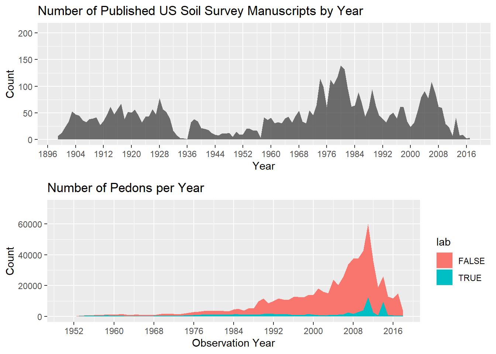
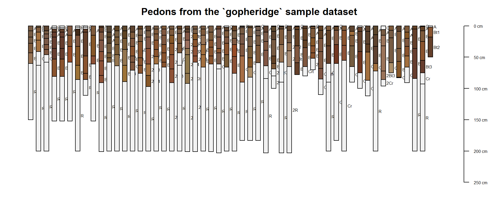
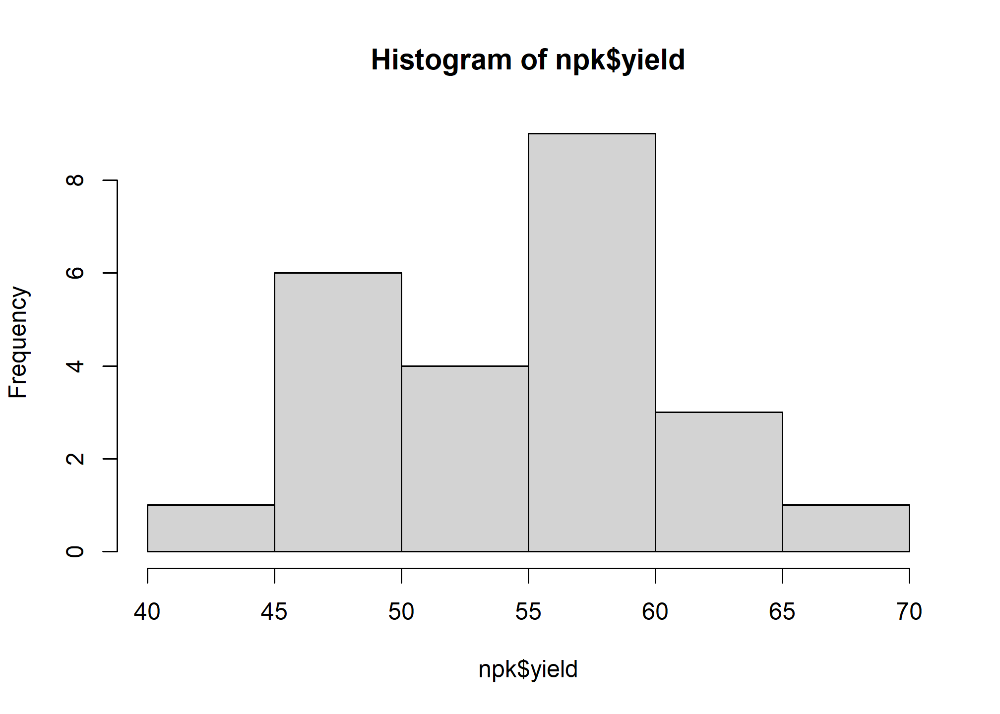
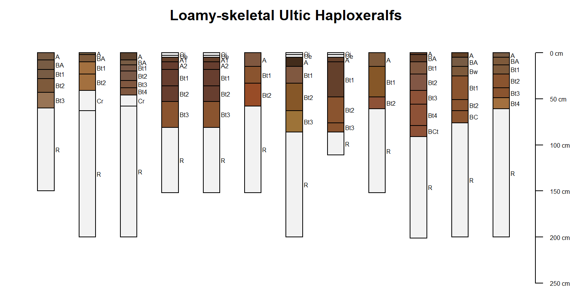
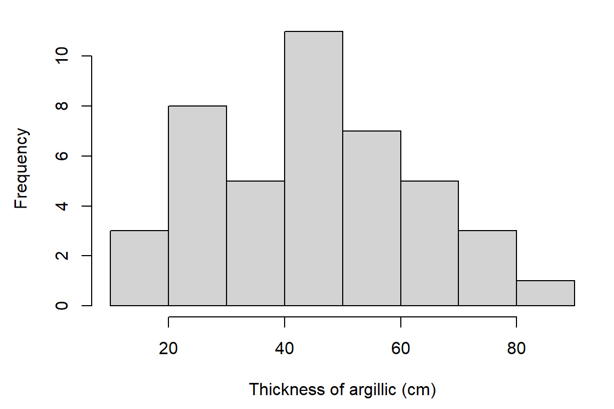
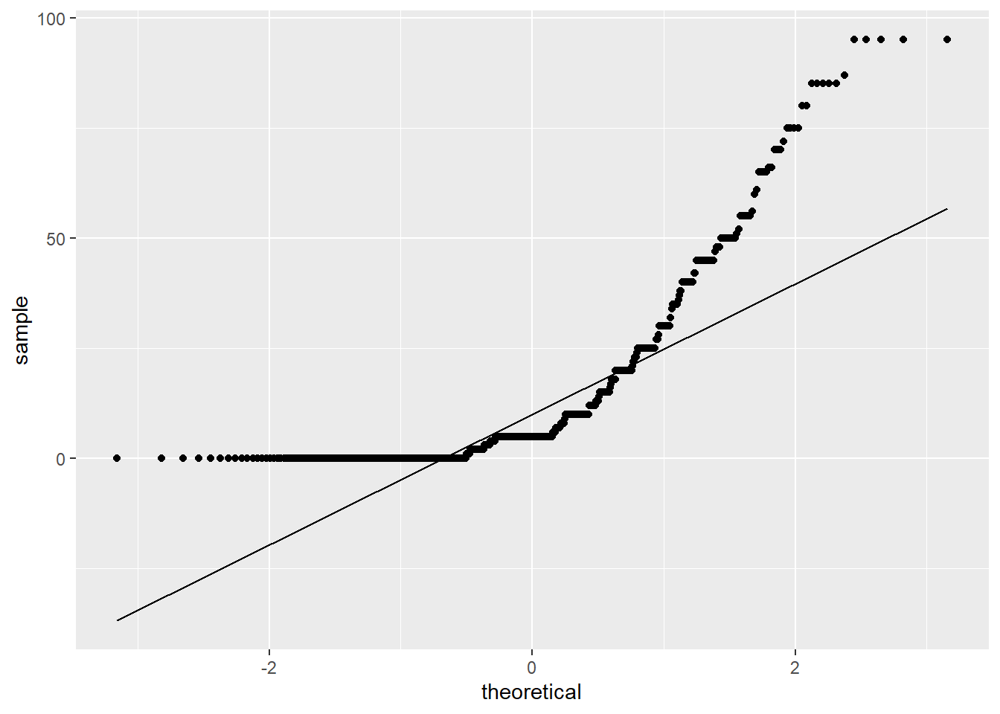
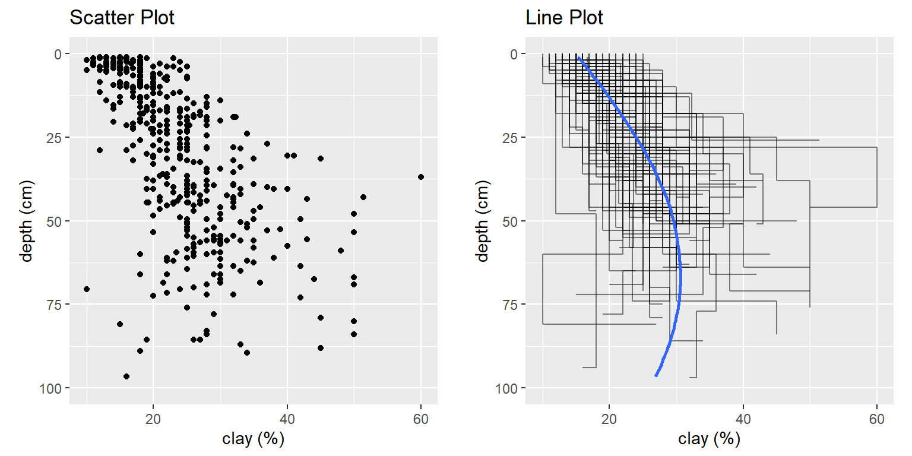

Chapter 3 The Data We Use

3.1 Objectives (Data)
- Learn more about R and how to inspect objects and data types
- Use the soilDB package to load NASIS pedon data into R
- Learn about the checks run on data loaded by the
fetchNASIS()function - Understand the structure of data stored in a
SoilProfileCollection(SPC) - Learn ways to logically filter and subset data in R
- Learn how functions can be used to bundle operations
- Review additional data that is accessible via extended data functions
- Introduce
soilReportsR package
3.2 The Structure of Our Data
What if you could extract, organize, and visualize data from NASIS and many other commonly used soil database sources with a couple of lines of code?

We have created the soilDB package just for this! soilDB returns tabular data, spatial data objects and SoilProfileCollection objects! SoilProfileCollection objects are defined in the aqp (Algorithms for Quantitative Pedology) package as a handy abstraction for commonly used data and “bookkeeping” of said data.
3.2.1 Package References
The manual pages for soilDB and aqp are accessible (click index at the bottom of the Help tab in RStudio) by entering the following into the R console:
3.2.2 soilDB functions for tabular data
soilDB functions are the quickest way to get up and running:
-
- Gets and re-packages data from a local NASIS database.
-
- Gets KSSL laboratory pedon/horizon layer data from a local NASIS database.
-
- Gets KSSL data from the SoilWeb system via BBOX, MLRA, or series name query.
-
- Fetches a limited subset of horizon- and site-level attributes for named soil series from the SoilWeb system.
-
- Full-text searching of OSD sections.
-
- Gets Rapid Carbon Assessment (RaCA) data by State, geographic bounding-box, RaCA site ID, or series query from the SoilWeb system.
-
- Queries soil and climate data from USDA-NRCS SCAN Stations.
-
- Downloads data from the Henry Mount Soil Climate Database.
-
- Fetches commonly used site and horizon data from a PedonPC v.5 database.
-
- Fetches component data from Soil Data Access.
-
- Submits queries to the Soil Data Access system.
3.2.3 Importance of Pedon Data
The importance of pedon data for present and future work cannot be overstated. These data represent decades of on-the-ground observations of the soil resource for a given area.
As difficult as it may be to take the time to enter legacy pedon data, it is vitally important that we capture this resource and get these data into NASIS as an archive of point observations.
##
## Attaching package: 'dplyr'## The following objects are masked from 'package:stats':
##
## filter, lag## The following objects are masked from 'package:base':
##
## intersect, setdiff, setequal, union

3.2.4 Some Issues With Pedon Data
Making and documenting observations of soil requires hard work. Digging is difficult, and writing soil descriptions is time consuming!
Our confidence in observations commonly weakens with the depth of the material described.
- If we acknowledge this, which we must, then how do we deal with it in pedon data?
- Use a cutoff depth, for example 100 cm, can be used to truncate observations to a zone of greater confidence.
- Show the relative confidence of the data with depth.
- If we acknowledge this, which we must, then how do we deal with it in pedon data?
3.3 Challenges with Pedon Data
- Consistency
- Missing data
- Confidence in the observations
- Uncertainty with depth
- Description style differences
- Depth described, horizonation usage styles
- Legacy data vintage
- Decadal span of data
- Taxonomy updates, horizon nomenclature
- Location confidence
- Origin of the location information
- Datum used for data collection
- Accuracy for GPS values at the time of data collection
3.3.1 Meeting the Challenges
- Graphical display of the data and summary outputs (slice-wise aggregation)
- Generalized Horizon Labels (GHL). Derive an aggregate soil profile and summarize soil properties for groups of similar soils.
- More on that process can be seen in the following tutorial: GHL Aggregation Presentation and GHL Aggregation Tutorial.
For more information regarding difficult pedon data, see the following tutorial in the “aqp” package:
Dealing with Troublesome data.
3.4 The aqp SoilProfileCollection
The SoilProfileCollection class (SPC) provided by the aqp package is a soil-specific tool.
It is a type of object that simplifies the process of working with collections of data associated with soil profiles, e.g., site-level data, horizon-level data, spatial data, diagnostic horizon data, metadata, etc.
A SoilProfileCollection is like the NASIS Pedon “object” in that it provides generalizations, specific routines and rules about the fundamental tables and their relationships that are relevant to soil observations.
In many ways the SPC is more adaptable than the NASIS Pedon concept, strictly speaking. It can “contain” aggregations of any relevant parts of any soil data schema (table and column structure). Through this mechanism, it can be a mediator between formats and algorithms.
3.4.1 SoilProfileCollection methods
Many “familiar” methods are defined for the SoilProfileCollection object. Some are unique, and others operate like more common functions of vector and data.frame objects, such as nrow() (“how many horizons?”) or length() (“how many sites/pedons?”).
Perhaps most importantly, when you access the site() data or the horizons() data of a SoilProfileCollection, you get a data.frame object that you can use like any other you might use or make in R.
3.4.1.1 Promoting data.frame to SoilProfileCollection
The SoilProfileCollection object is a collection of 1-D profile descriptions, of the type conventionally described on a Form 232, or on tabular data returned from laboratory.
The object is “horizon data forward” in that you start with that, and can create site-level attributes by normalization, joins, calculations and more.
Most of the time if you are using your NASIS data, or an official database, there are defined ways of getting the data out.
In the pre-course, we had you set up a process so you could connect to your local NASIS instance to “fetch” data and have methods like fetchNASIS put things together for you.
This input to make a SoilProfileCollection can be represented most simply as a data.frame with unique site or profile ID and depth combinations for each horizon or layer – for example, a subset of the phorizon or chorizon table in NASIS.
A simple example of this type oftabular horizon data is the sp4 data set: some serpentine soil profiles stored in a data.frame in the aqp package (after McGahan et al., 2009).
## This is aqp 1.27##
## Attaching package: 'aqp'## The following objects are masked from 'package:dplyr':
##
## combine, filter, group_by, mutate, slice, summarize## The following object is masked from 'package:stats':
##
## filter## id name top bottom K Mg Ca CEC_7 ex_Ca_to_Mg sand silt clay CF
## 1 colusa A 0 3 0.3 25.7 9.0 23.0 0.35 46 33 21 0.12
## 2 colusa ABt 3 8 0.2 23.7 5.6 21.4 0.23 42 31 27 0.27
## 3 colusa Bt1 8 30 0.1 23.2 1.9 23.7 0.08 40 28 32 0.27
## 4 colusa Bt2 30 42 0.1 44.3 0.3 43.0 0.01 27 18 55 0.16
## 5 glenn A 0 9 0.2 21.9 4.4 18.8 0.20 54 20 25 0.55
## 6 glenn Bt 9 34 0.3 18.9 4.5 27.5 0.20 49 18 34 0.84## [1] "data.frame"To convert this horizon data into a SoilProfileCollection, we need to identify three parameters: idname, top, and bottom. These parameters refer to the columns of unique profile IDs, top depths and bottom depths, respectively.
These three define the “logical consistency” of 1-D descriptions within the collection. We specify this for your input data.frame using the depths<- function.
Use a formula to specify column names in the data.frame, in this case "id", "top" and "bottom".
## [1] "SoilProfileCollection"
## attr(,"package")
## [1] "aqp"3.4.1.1.1 Syntax Explanation
The formula expresses the idea that a profile 1-dimensional description id has a vertical extent (Z, in profile) defined by set of top and bottom depths described for that profile.
In this simplified 1-dimensional model we are concerned about keeping track of things like thickness, order, overlaps, gaps, or duplication in the data. From this, we can do a lot of “logic” checks – strictly from a perspective of basic physical representation of the horizon data.
3.4.1.2 Extracting Site and Horizon Data
The SoilProfileCollection is an S4 R object. S4 objects have slots. Of primary importance, it has slots for site-level data and horizon-level data.
You can extract values from these slots using the site() and horizons() functions. These create data.frame objects that are separate from the SoilProfileCollection.
## 'data.frame': 10 obs. of 1 variable:
## $ id: chr "colusa" "glenn" "kings" "mariposa" ...## 'data.frame': 30 obs. of 14 variables:
## $ id : chr "colusa" "colusa" "colusa" "colusa" ...
## $ name : chr "A" "ABt" "Bt1" "Bt2" ...
## $ top : int 0 3 8 30 0 9 0 4 13 0 ...
## $ bottom : int 3 8 30 42 9 34 4 13 40 3 ...
## $ K : num 0.3 0.2 0.1 0.1 0.2 0.3 0.2 0.6 0.8 0.6 ...
## $ Mg : num 25.7 23.7 23.2 44.3 21.9 18.9 12.1 12.1 17.7 28.3 ...
## $ Ca : num 9 5.6 1.9 0.3 4.4 4.5 1.4 7 4.4 5.8 ...
## $ CEC_7 : num 23 21.4 23.7 43 18.8 27.5 23.7 18 20 29.3 ...
## $ ex_Ca_to_Mg: num 0.35 0.23 0.08 0.01 0.2 0.2 0.58 0.51 0.25 0.2 ...
## $ sand : int 46 42 40 27 54 49 43 36 27 42 ...
## $ silt : int 33 31 28 18 20 18 55 49 45 26 ...
## $ clay : int 21 27 32 55 25 34 3 15 27 32 ...
## $ CF : num 0.12 0.27 0.27 0.16 0.55 0.84 0.5 0.75 0.67 0.25 ...
## $ hzID : chr "1" "2" "3" "4" ...3.4.1.3 Methods like data.frame
The base R functions for accessing and setting data.frame columns by name such as $ and [[ work for SoilProfileCollection objects, too.
3.4.1.3.1 $ and [[
## [1] 21 27 32 55 25 34 3 15 27 32 25 31 33 13 21 23 15 17 12 19 14 14 22 25 40 51 67 24 25 32## [1] 21 27 32 55 25 34 3 15 27 32 25 31 33 13 21 23 15 17 12 19 14 14 22 25 40 51 67 24 25 32## [1] 21 27 32 55 25 34 3 15 27 32 25 31 33 13 21 23 15 17 12 19 14 14 22 25 40 51 67 24 25 32## [1] 21 27 32 55 25 34 3 15 27 32 25 31 33 13 21 23 15 17 12 19 14 14 22 25 40 51 67 24 25 32# use $<- / [[<- to set proportional clay content
sp4$clay <- sp4[['clay']] / 100
# undo what we did above; back to percentage
sp4[['clay']] <- sp4$clay * 100
# create new site variable (recycled for all sites)
site(sp4)$newvar1 <- "numberone"
# create new horizon variable (recycled for all horizons)
horizons(sp4)$newvar2 <- "numbertwo"3.4.1.3.2 [
The SoilProfileCollection also has [ – but a different interpretation from the [i, j] indexing in data.frame.
In a
data.frameyou haveobject[row, column, drop=TRUE]; the result is adata.frame(or a vector with defaultdrop).In a
SoilProfileCollectionyou haveobject[site, horizon]; the result is aSoilProfileCollection.
## SoilProfileCollection with 2 profiles and 6 horizons
## profile ID: id | horizon ID: hzID
## Depth range: 34 - 42 cm
##
## ----- Horizons (6 / 6 rows | 10 / 15 columns) -----
## id hzID top bottom name K Mg Ca CEC_7 ex_Ca_to_Mg
## colusa 1 0 3 A 0.3 25.7 9.0 23.0 0.35
## colusa 2 3 8 ABt 0.2 23.7 5.6 21.4 0.23
## colusa 3 8 30 Bt1 0.1 23.2 1.9 23.7 0.08
## colusa 4 30 42 Bt2 0.1 44.3 0.3 43.0 0.01
## glenn 5 0 9 A 0.2 21.9 4.4 18.8 0.20
## glenn 6 9 34 Bt 0.3 18.9 4.5 27.5 0.20
##
## ----- Sites (2 / 2 rows | 2 / 2 columns) -----
## id newvar1
## colusa numberone
## glenn numberone
##
## Spatial Data: [EMPTY]## SoilProfileCollection with 10 profiles and 20 horizons
## profile ID: id | horizon ID: hzID
## Depth range: 5 - 40 cm
##
## ----- Horizons (6 / 20 rows | 10 / 15 columns) -----
## id hzID top bottom name K Mg Ca CEC_7 ex_Ca_to_Mg
## colusa 1 0 3 A 0.3 25.7 9.0 23.0 0.35
## colusa 2 3 8 ABt 0.2 23.7 5.6 21.4 0.23
## glenn 5 0 9 A 0.2 21.9 4.4 18.8 0.20
## glenn 6 9 34 Bt 0.3 18.9 4.5 27.5 0.20
## kings 7 0 4 A 0.2 12.1 1.4 23.7 0.58
## kings 8 4 13 Bt1 0.6 12.1 7.0 18.0 0.51
## [... more horizons ...]
##
## ----- Sites (6 / 10 rows | 2 / 2 columns) -----
## id newvar1
## colusa numberone
## glenn numberone
## kings numberone
## mariposa numberone
## mendocino numberone
## napa numberone
## [... more sites ...]
##
## Spatial Data: [EMPTY]Everything has gets subset simultaneously – sites, horizons, spatial data, diagnostics, etc. in one command.
## id name top bottom K Mg Ca CEC_7 ex_Ca_to_Mg sand silt clay CF hzID newvar2
## 1 colusa A 0 3 0.3 25.7 9.0 23.0 0.35 46 33 21 0.12 1 numbertwo
## 2 colusa ABt 3 8 0.2 23.7 5.6 21.4 0.23 42 31 27 0.27 2 numbertwo3.5 Using the soilDB Package
The soilDB package for R works provides functions for accessing data stored in in NASIS, KSSL, SDA, SoilWeb, SoilGrids and other sources. These are wrappers around an internal database interface to NASIS; the one that you set up during the pre-course.
Basic data checks are run within fetch functions. get functions are a usually a step lower in terms of abstraction – and generally return single data.frame or list of data.frame.
You can set up scripts to make custom queries against these or other sources on your own – there is an example at the end of this section.
For now, we will start with the fetch functions and others that will get you a large variety of data you can use for soil and ecological site analyses.
3.5.1 Open Database Connectivity (ODBC) Connection to NASIS
After setting up an ODBC connection, you can use R to access data from a selected set defined in your local NASIS database.
How to Create an ODBC Connection to local NASIS database for R.
Does NASIS need to be open and running to query data using soilDB?
No, fetchNASIS() works whether the NASIS application is running or not. You just need to make sure that the data you want has been loaded into your selected set.
3.5.2 fetchNASIS()
The [fetchNASIS()](http://ncss-tech.github.io/soilDB/docs/reference/fetchNASIS.html) convenience function extracts data from a NASIS selected set via Structured Query Language (SQL).
Note that the import process in fetchNASIS(), and the other methods, is not comprehensive. It does not pull every column for every table related to pedon data out of NASIS.
Instead, it pulls essential / commonly used pedon and horizon data. Higher level functions like fetchNASIS() bundle a series of lower-level queries to get specific parts of the Pedon or Component data structures. Much of the nested complexity of NASIS is simplified in the resulting object. You may need to make more detailed queries and joins to resolve specific questions.
##
## Attaching package: 'diagram'## The following object is masked from 'package:aqp':
##
## coordinates
Many-to-one relationships are “flattened” where possible by fetchNASIS(). This aggregates the data from various tables into one “site” record with related horizon records, per profile.
You can see the child tables that are aggregated using the get_extended_data_from_NASIS() method, which returns a named list of child table sources that are joined to the SoilProfileCollection made with fetchNASIS() using the internal record IDs in the respective tables.
3.5.2.1 fetchNASIS arguments
fetchNASIS() has many arguments:
- from = ‘pedons’ or ‘components’ or ‘pedon_report’
- This option allows you to select which data you want to load from NASIS. Choosing either ‘pedons’ or ‘components’ will load data from your local database. If ‘pedon_report’ is specified then it will load data from the text file generated by the NASIS report ‘fetchNASIS’.
- url = ‘https://nasis.sc.egov.usda.gov/OfflineReports/fetchNASIS_04e6ec7d-fab5-4a90-bb88-9b9dc56dfdd8.txt’
- If from = ‘pedon_report’ this option will load data from the URL that is generated when the NASIS report ‘fetchNASIS’ is run offline against the national database. This is useful for loading more than 20,000 pedons at one time, such for an entire Soil Survey Region.
- SS =
TRUE/FALSE- The Selected Set (SS) option allows you to choose whether you want the data to load from your current selected set in NASIS or from the local database tables. The default is set to
TRUEso if unspecifiedfetchNASIS()will always load from the data in the selected set.
- The Selected Set (SS) option allows you to choose whether you want the data to load from your current selected set in NASIS or from the local database tables. The default is set to
- stringAsFactors =
TRUE/FALSE- This option allows you to select whether to convert strings into factors or not. The default is set to FALSE, which will handle strings as character formats. Manually set this option to
TRUEif you wish to handle character strings as factors.
- This option allows you to select whether to convert strings into factors or not. The default is set to FALSE, which will handle strings as character formats. Manually set this option to
- rmHzErrors =
TRUE/FALSE- Setting this value to
TRUE(the default) enables checks for horizon depth consistency. Consider setting this argument toFALSEif you aren’t concerned about horizon-depth errors or if you know that your selected set contains many combination horizons (e.g., consisting of E/Bt horizons or similar two-part horizons described individually for the same depth range). Note that any pedons flagged as having horizon-depth errors (rmHzErrors =TRUE) are omitted from the data returned byfetchNASIS().
- Setting this value to
- nullFragsAreZero =
TRUE/FALSE- Setting this value to
TRUE(the default) converts null entries for rock fragment volumes to 0. This is typically the right assumption because rock fragment data are typically populated only when observed. If you know that your data contain a combination of omitted information (e.g. no rock fragment volumes are populated) then consider setting this argument toFALSE.
- Setting this value to
- soilColorState = ‘moist’ or ‘dry’
- Select dry or moist colors to be converted and placed into a horizon-level attribute called
soil_color. Moist and dry colors are also stored inmoist_soil_coloranddry_soil_color.
- Select dry or moist colors to be converted and placed into a horizon-level attribute called
- lab =
TRUE/FALSE- This option allows for loading the data associated with horizons that may be in the
phlabresultstable. The default is set toFALSE, which will not load records from thephlabresultstable.
- This option allows for loading the data associated with horizons that may be in the
For more information on the data checks and adjusting the default options to fetchNASIS() function, see the following resource: Tips on Getting Data from NASIS into R.
3.5.3 The gopheridge soilDB Dataset
The gopheridge sample data set is a sample R object returned from fetchNASIS() in a self-contained .rda file stored in soilDB.
Open RStudio, and set up the environment by loading packages and the gopheridge sample dataset.
library(aqp)
library(soilDB)
# load example dataset
data(gopheridge, package = "soilDB")
# what kind of object is this?
class(gopheridge)## [1] "SoilProfileCollection"
## attr(,"package")
## [1] "aqp"## Formal class 'SoilProfileCollection' [package "aqp"] with 9 slots
## ..@ idcol : chr "peiid"
## ..@ hzidcol : chr "phiid"
## ..@ depthcols : chr [1:2] "hzdept" "hzdepb"
## ..@ metadata :List of 8
## ..@ horizons :'data.frame': 317 obs. of 73 variables:
## ..@ site :'data.frame': 52 obs. of 114 variables:
## ..@ sp :Formal class 'SpatialPoints' [package "sp"] with 3 slots
## ..@ diagnostic :'data.frame': 164 obs. of 4 variables:
## ..@ restrictions:'data.frame': 56 obs. of 8 variables:## [1] "peiid" "siteiid"
## [3] "pedon_id" "site_id"
## [5] "obs_date" "utmzone"
## [7] "utmeasting" "utmnorthing"
## [9] "x" "y"
## [11] "horizdatnm" "x_std"
## [13] "y_std" "gpspositionalerror"
## [15] "describer" "pedonpurpose"
## [17] "pedontype" "pedlabsampnum"
## [19] "labdatadescflag" "tsectstopnum"
## [21] "tsectinterval" "utransectid"
## [23] "tsectkind" "tsectselmeth"
## [25] "elev_field" "slope_field"
## [27] "aspect_field" "plantassocnm"
## [29] "earthcovkind1" "earthcovkind2"
## [31] "erocl" "bedrckdepth"
## [33] "bedrckkind" "bedrckhardness"
## [35] "hillslopeprof" "geomslopeseg"
## [37] "shapeacross" "shapedown"
## [39] "slopecomplex" "drainagecl"
## [41] "flodfreqcl" "floddurcl"
## [43] "flodmonthbeg" "pondfreqcl"
## [45] "ponddurcl" "pondmonthbeg"
## [47] "geomposhill" "geomposmntn"
## [49] "geomposflats" "swaterdepth"
## [51] "slope_shape" "classdate"
## [53] "classifier" "classtype"
## [55] "taxonname" "localphase"
## [57] "taxonkind" "seriesstatus"
## [59] "taxpartsize" "taxorder"
## [61] "taxsuborder" "taxgrtgroup"
## [63] "taxsubgrp" "soiltaxedition"
## [65] "osdtypelocflag" "taxmoistcl"
## [67] "taxtempregime" "taxfamother"
## [69] "psctopdepth" "pscbotdepth"
## [71] "selection_method" "ecositeid"
## [73] "ecositenm" "ecositecorrdate"
## [75] "es_classifier" "es_selection_method"
## [77] "ochric.epipedon" "argillic.horizon"
## [79] "paralithic.contact" "lithic.contact"
## [81] "umbric.epipedon" "cambic.horizon"
## [83] "mollic.epipedon" "paralithic.materials"
## [85] "lithologic.discontinuity" "andic.soil.properties"
## [87] "densic.contact" "abrupt.textural.change"
## [89] "aquic.conditions" "duripan"
## [91] "slickensides" "redox.depletions.with.chroma.2.or.less"
## [93] "redox.concentrations" "reduced.matrix"
## [95] "densic.materials" "volcanic.glass"
## [97] "folistic.epipedon" "albic.materials"
## [99] "human.transported.material" "strongly.contrasting.particle.size.class"
## [101] "secondary.carbonates" "anthropic.epipedon"
## [103] "surface_fgravel" "surface_gravel"
## [105] "surface_cobbles" "surface_stones"
## [107] "surface_boulders" "surface_channers"
## [109] "surface_flagstones" "surface_paragravel"
## [111] "surface_paracobbles" "landform_string"
## [113] "pmkind" "pmorigin"## [1] "phiid" "peiid" "hzname" "genhz"
## [5] "hzdept" "hzdepb" "bounddistinct" "boundtopo"
## [9] "clay" "silt" "sand" "fragvoltot"
## [13] "texture" "texcl" "lieutex" "phfield"
## [17] "effclass" "labsampnum" "rupresblkdry" "rupresblkmst"
## [21] "rupresblkcem" "stickiness" "plasticity" "ksatpedon"
## [25] "texture_class" "d_r" "d_g" "d_b"
## [29] "d_hue" "d_value" "d_chroma" "d_sigma"
## [33] "m_r" "m_g" "m_b" "m_hue"
## [37] "m_value" "m_chroma" "m_sigma" "moist_soil_color"
## [41] "dry_soil_color" "fine_gravel" "gravel" "cobbles"
## [45] "stones" "boulders" "channers" "flagstones"
## [49] "parafine_gravel" "paragravel" "paracobbles" "parastones"
## [53] "paraboulders" "parachanners" "paraflagstones" "unspecified"
## [57] "total_frags_pct_nopf" "total_frags_pct" "art_fgr" "art_gr"
## [61] "art_cb" "art_st" "art_by" "art_ch"
## [65] "art_fl" "art_unspecified" "total_art_pct" "huartvol_cohesive"
## [69] "huartvol_penetrable" "huartvol_innocuous" "huartvol_persistent" "soil_color"
## [73] "hzID"3.5.3.1 Make profile sketches
The plot() function applied to a SoilProfileCollection object generates sketches based on horizon depths, designations, and colors.
The fetchNASIS() function automatically converts moist Munsell colors into R-style colors.
Multiple colors per horizon are mixed to make the ones that are shown by default in the calculated soil_color fields. See ?plotSPC for a detailed list of arguments and examples.
par(mar = c(1, 1, 1, 1))
# omitting pedon IDs and horizon designations
plot(gopheridge,
print.id = FALSE,
name = '',
width = 0.3)
title('Pedons from the `gopheridge` sample dataset', line = -0.5)
When you load pedons using the fetchNASIS() function, the following data checks are performed:
Presence of multiple map datums. Results reported to the user and the data are not modified.
Inconsistent horizon boundaries. Pedons with inconsistent horizon boundaries are not loaded. In most cases, this occurs when the bottom depth of a horizon is not the same as the upper depth of the next lower horizon.
## hzname top bot
## 1 A 0 30
## 2 Bt1 38 56
## 3 Bt2 56 121
## 4 Bk 121 135
## 5 R 135 NANote the issue above. The bottom depth of the A horizon and the upper depth of the Bt1 horizon should be the same: either 30 or 38 cm. The correct depth needs to be determined and fixed in the database
Missing lower horizon depths. Offending horizons are fixed by replacing the missing bottom depth with the top depth plus 2 cm. In the case of the profile shown above, a bottom depth of 137 cm would be inserted where the depth is missing.
Sites missing pedon records. Data without corresponding horizons are not loaded.
3.5.3.2 Find Pedons with Errors
If errors in the pedon data are detected when loading data using fetchNASIS(), the following “get” commands can trace them back to the corresponding records in NASIS.
These access an option that is stored in a special object called an Environment associated with the soilDB package – they generally contain vectors of profile IDs.
get('sites.missing.pedons', envir = soilDB.env)- Returns user site ID for sites missing pedons
get('dup.pedon.ids', envir = soilDB.env)- Returns user pedon ID for sites with duplicate pedon ID
get('bad.pedon.ids', envir = soilDB.env)- Returns user pedon ID for pedons with inconsistent horizon depths
get('bad.horizons', envir = soilDB.env)- Returns a data.frame of horizon-level information for pedons with inconsistent horizon depths
get('sites.missing.pedons', envir = soilDB.env)
get('dup.pedon.ids', envir = soilDB.env)
get('bad.pedon.ids', envir = soilDB.env)
get('bad.horizons', envir = soilDB.env)These get() calls access variables stored in the package environment soilDB.env. The variables only exist if there are “problems” / values in them – and if you fix the errors in database, they will be removed accordingly on next run.
For more information on the design of soilDB functions, see the following documentation: Introduction to soilDB.
Additional documentation and examples can be found in:
3.6 Working with Data in R
3.6.1 Summaries
Now that you’ve loaded some data, you can look at additional ways to summarize and interact with data elements.
3.6.1.1 table()
The base R table() function is very useful for quick summary operations. It returns a named vector with the amount of each unique level of the a given vector.
The numeric vector of “counts” is commonly combined with other functions such as sort(), order(), prop.table(), is.na() or !is.na() (is not NA) to identify abundance, proportions, or missing data (NA).
# load required packages
library(aqp)
library(soilDB)
data("gopheridge", package = "soilDB")
# for these examples, we use the gopheridge dataset as our "selected set"
pedons <- gopheridge # fetchNASIS() # you can use fetchNASIS
# summarize which soil taxa we have loaded
table(pedons$taxonname)##
## Gopheridge
## 52## Gopheridge
## 52# could do the same thing for taxonomic subgroups or any column of the SPC at the site or horizon levels
table(pedons$taxsubgrp)##
## mollic haploxeralfs typic haploxerepts ultic haploxeralfs ultic haploxerolls
## 1 6 44 1##
## ultic haploxeralfs typic haploxerepts mollic haploxeralfs ultic haploxerolls
## 44 6 1 13.6.1.2 dput()
Another very useful function is dput(), which prints a string-representation of the output of an R expression as code that generates that output so that you can re-use it.
It is also good short-hand for concatenating a comma-delimited list.
Here, we select the first four pedon_id values in pedons site table, and print out a comma-separated c() expression showing those values as a static R expression.
## c("08DWB028", "07RJV098", "07RJV099", "S2007CA009002")This result string can be copy-pasted as a comma-delimited string, used as string for NASIS list queries or other things.
The dput() function is helpful when sending questions or example data to colleagues. Here, we see that the results of dput() are equivalent to the input after evaluation by R.
## [1] TRUE3.6.1.3 The dplyr package and “tidy” data principles
This is a stub to talk about dplyr some links to tidyverse-centric examples of working with data.frame/tibble and summarizing them.
Talk about cool things like rowwise(), across() and translation to high-performance code (dtplyr) and SQL (dbplyr).
3.6.2 Missing Values
##
## mollic haploxeralfs typic haploxerepts ultic haploxeralfs ultic haploxerolls
## 1 6 44 1##
## FALSE
## 52##
## TRUE
## 52# it can also be applied to horizon level columns in the SPC
sort(table(pedons$texture), decreasing=TRUE)##
## BR L GR-L GRV-L CBV-L SPM GRX-L SIL GRV-CL CBV-CL
## 58 36 33 24 18 14 12 12 9 8
## GR-SIL CBX-L GRX-CL CBX-CL GRV-SIL CL GRV-SCL GRX-C MPM SL
## 7 6 5 4 4 3 3 3 3 3
## CB-L GR-CL GRX-SCL PGR-C PGRX-L SICL STV-CL STV-L STX-C STX-L
## 2 2 2 2 2 2 2 2 2 2
## C CB-C CB-CL CB-SCL CB-SIL CBV-SIL CBX-SCL CN-L CN-SICL CNX-L
## 1 1 1 1 1 1 1 1 1 1
## CNX-SICL FLV-L GR-C GR-SIC GRV-SICL GRX-SIC GRX-SIL PCB-SICL PCBV-SICL PCN-C
## 1 1 1 1 1 1 1 1 1 1
## PCNX-CL PGRV-C PGRV-CL PGRX-SCL PGRX-SIL ST-L STV-C STX-CL STX-SICL
## 1 1 1 1 1 1 1 1 13.6.3 Logical Operators
- Less than
<, greater than>, less than or equal to<=, and greater than or equal to>=. %in%Equivalent toIN ()in SQL; same logic asmatch()- Example:
pedons$taxpartsize %in% c('loamy-skeletal', 'sandy-skeletal') - Returns a vector of
TRUE/FALSEequal in length to left-hand side.
- Example:
!=Not-equal-to character “string.”==Note in the example above that R uses a double equal sign as “equal to.”
3.6.4 Pattern Matching
The following examples use the grep() function to pattern match within the data, create an index of the SoilProfileCollection for records that match the specified pattern within that column, and then use that index to filter to specific sites and their corresponding profiles.
Patterns are specified using regular expression (REGEX) syntax.
This process can be applied to many different columns in the SPC based on how you need to filter the data. This example pattern matches on the tax_subgroup column, but another useful application might be to pattern match on geomorphology or parent material.
Say we want to see what the variation of particle size classes are within a specific subgroup? We can use grep() to create a row index, then apply that index to the SoilProfileCollection.
# create a numeric index for pedons with taxsubgroup containing 'typic'
idx <- grep('typic', pedons$taxsubgrp)
idx## [1] 11 12 13 14 26 50# use square bracket notation to subset 'typic' soils in `subset1` object
subset1 <- pedons[idx,]
subset1## SoilProfileCollection with 6 profiles and 37 horizons
## profile ID: peiid | horizon ID: phiid
## Depth range: 200 - 200 cm
##
## ----- Horizons (6 / 37 rows | 10 / 73 columns) -----
## peiid phiid hzdept hzdepb hzname genhz bounddistinct boundtopo clay silt
## 351685 1567471 0 10 A1 A clear smooth 20 35
## 351685 1567472 10 18 A2 A clear wavy 20 35
## 351685 1567473 18 28 A3 A clear wavy 20 35
## 351685 1567474 28 43 Bw1 Bt clear wavy 20 35
## 351685 1567475 43 51 Bw2 Bt clear wavy 20 35
## 351685 1567476 51 58 BC BCt abrupt wavy 20 35
## [... more horizons ...]
##
## ----- Sites (6 / 6 rows | 10 / 114 columns) -----
## peiid siteiid pedon_id site_id obs_date utmzone utmeasting utmnorthing x y
## 351685 352173 07RJV100 07CA630RJV100 2007-09-17 10 731914.0 4180918 -120.3678 37.74611
## 351686 352174 07RJV101 07CA630RJV101 2007-09-17 10 732398.3 4180564 -120.3625 37.74278
## 351687 352175 07RJV102 07CA630RJV102 2007-09-17 10 732298.0 4181093 -120.3633 37.74778
## 351688 352176 07RJV103 07CA630RJV103 2007-09-24 10 731470.3 4177508 -120.3739 37.71556
## 352495 352964 07RJV093 07CA630RJV093 2007-08-28 10 733216.8 4181168 -120.3531 37.74805
## 640650 646344 07JCR008 07CA630JCR008 2007-06-14 10 700696.7 4201941 -120.7161 37.94278
##
## Spatial Data: [EMPTY]# or use the index directly to summarize taxpartsize for 'typic' soils
sort(table(pedons$taxpartsize[idx]), decreasing = TRUE)##
## loamy-skeletal clayey-skeletal
## 5 1Note: grep() below has an invert argument (default FALSE). This option is very useful for excluding the results of the pattern matching process by inverting whatever the result is. grepl() is the logical version of grep(), so you can invert it using the logical NOT operator: !.
Another method is to create an index using which() function. which() takes any logical vector (or expression), and it returns the indices (positions) where that expression returns TRUE.
Do a graphical check to see the “typic” profiles are selected.
Plot them in R using the SoilProfileCollection “plot” method (e.g., specialized version of the generic plot() function).
# adjust margins
par(mar=c(1,0,0,1))
# plot the first 10 profiles of subset1
plot(subset1[1:10, ], label = 'taxsubgrp', max.depth = 60)
title('Pedons with the word "typic" at subgroup-level of Soil Taxonomy', line=-2)
For more information on using regular expressions in grep() for pattern matching operations, see: Regular-expression-syntax.
Quick check: Compare or run these commands with some code, and review the documentation, to answer the questions.
- True or False:
grepl()returns a numeric vector - True or False:
which(grepl('typic', pedons$taxsubgrp))is the same asgrep('typic', pedons$taxsubgrp).
3.6.4.1 Important syntax options for REGEX pattern matching
|ORoperator for multiple expressions:- Example:
grep('loamy|sandy', c("loamy-skeletal","sandy","sandy-skeletal"))- “loamy OR sandy”
- Example:
^Anchor to beginning of string / line:- Example:
grep('^sandy', c("loamy-skeletal","sandy","sandy-skeletal"))- “STARTS WITH sandy”
- Example:
$Anchor to end of string / line:- Example:
grep('skeletal$', c("loamy-skeletal","sandy","sandy-skeletal"))- “ENDS WITH skeletal”
- Example:
\\bAnchor to word boundary:- Example:
grep('\\bmesic', c("mesic","thermic","isomesic"))- “WORD STARTS WITH mesic” (e.g. not “isomesic”)
- Example:
3.6.4.2 Resources for learning about regular expressions
- https://regex101.com/ & https://regexr.com/ - Online regular expression testers
- http://www.regular-expressions.info/quickstart.html - One-page regular expression quick start guide
3.6.5 Filtering
A variety of methods are available to subset or “filter” R data objects, from data.frame or vector, to something more complex like a Spatial object or a SoilProfileCollection.
You can index many R objects using numeric or logical expressions as above. There are also methods that make this process a little easier.
The base R method for this is subset() and it works on data.frame objects. It is nice because you can specify column names without explicitly referencing the data set, since subset uses non-standard evaluation of expressions passed as arguments.
3.6.6 Filtering Data by Logical Criteria with aqp::subset
We use the SoilProfileCollection subset method, where we first specify a data (pedons) object then we can write expressions for the columns that exist in that object.
Here, we combine two logical expressions to find taxsubgrp containing "alfs" (Alfisols) with obsdate before January 1st, 2010.
subset2 <-subset(pedons, grepl("alfs", taxsubgrp) &
obs_date < as.POSIXlt("2010-01-01"))
# check taxonomic range of particle size classes in the data
# overwhelmingly these are described as loamy-skeletal ultic haploxeralfs
sort(table(subset2$taxsubgrp), decreasing = TRUE)##
## ultic haploxeralfs mollic haploxeralfs
## 28 1##
## loamy-skeletal clayey-skeletal fine fine-loamy
## 25 2 1 1# a double equal sign '==' is used for exact character or numeric criteria
subset3 <- subset(subset2, taxpartsize == 'loamy-skeletal')
table(subset3$taxpartsize)##
## loamy-skeletal
## 25par(mar = c(0, 0, 2, 1))
plotSPC(subset3[1:12, ], print.id = FALSE)
title('Loamy-skeletal Ultic Haploxeralfs')
3.6.7 Dates and Times
Unix time is a system for describing a point in time. It is the number of seconds that have elapsed since the Unix epoch, minus leap seconds; the Unix epoch is 00:00:00 UTC on 1 January 1970.
Above, we use the fact that you can logically compare dates and times if their string representation is converted to a common base R UNIX time representation known as POSIXlt.
This conversion accounts for important things like timezone, using your current locale – which is important to keep in mind.
3.6.7.1 zoo package
Tools for totally ordered indexed observations – especially irregular time series.
3.6.8 EXERCISE: Prepare Example Data
This is a sample “selected set” that will be used in the following sections.
For reproducibility and the sake of time, you can download the above two objects (mt663 and mt663err) with the following code – without loading them into your selected set.
To download the sample 2015MT663% data from the course page with R:
example.data.dir <- "C:/workspace2"
example.data.path <- file.path(example.data.dir, "mt663.zip")
if(!dir.exists(example.data.dir))
dir.create(example.data.dir, recursive = TRUE)
download.file("http://ncss-tech.github.io/stats_for_soil_survey/data/book/02/mt663.zip", destfile = example.data.path)
unzip(example.data.path, exdir = example.data.dir, overwrite = TRUE)Before continuing, imagine opening the NASIS client, populating your selected set with 2015MT663% using a query like “NSSC Pangaea – POINT-Pedon/Site by User Pedon ID”
And then using fetchNASIS() to get a SoilProfileCollection with and without rmHzErrors as shown (commented out) below:
## for this to work in this example, you need 2015MT663% in your NASIS selected set
# mt663err <- fetchNASIS(rmHzErrors = FALSE)
# mt663 <- fetchNASIS()When you ran the sample data download code, that code is essentially what you did. To load that sample object data into R, just use load() and the path to the .rda file (example.data.path or "C:/workspace2/mt663.rda")
3.7 Comparing Results with rmHzErrors
Here we compare the number of ochric epipedons that are shown as present in the site table of the SoilProfileCollection
With the default rmHzErrors = TRUE most of the profiles with ochric epipedons are removed – this is something you need to be aware of and inspect!
There are a lot of reasons why this can happen, which we will now investigate.
## [1] 46## [1] FALSE FALSE FALSE FALSE FALSE FALSE FALSE FALSE FALSE FALSE FALSE FALSE FALSE FALSE FALSE FALSE
## [17] FALSE TRUE FALSE FALSE FALSE FALSE FALSE TRUE TRUE TRUE FALSE FALSE FALSE FALSE TRUE FALSE
## [33] FALSE TRUE FALSE FALSE FALSE FALSE FALSE FALSE TRUE FALSE FALSE FALSE FALSE TRUE## [1] 46## siteiid peiid pedon_id site_id obs_date utmzone utmeasting utmnorthing x
## 18 1100755 1092665 2015MT6630556 2015MT6630556 2015-09-03 12 305081.6 5399079 -113.6499
## 24 1183405 1155011 2015MT6633522 2015MT6633522 2015-08-14 12 289926.5 5418878 -113.8658
## 25 1183412 1155018 2015MT6633529 2015MT6633529 2015-08-16 12 288676.1 5415611 -113.8812
## 26 1183413 1155019 2015MT6633530 2015MT6633530 2015-08-16 12 289240.8 5416496 -113.8739
## 31 1191592 1161198 2015MT6635255 2015MT6635255 2015-07-20 12 297939.2 5423022 -113.7587
## 34 1191603 1161209 2015MT6635266 2015MT6635266 2015-09-01 12 328171.5 5372499 -113.3253
## 41 1191610 1161216 2015MT6635273 2015MT6635273 2015-09-23 12 300260.3 5396456 -113.7141
## 46 1191616 1161222 2015MT6635279 2015MT6635279 2015-09-24 12 301042.5 5398455 -113.7045
## y horizdatnm x_std y_std gpspositionalerror
## 18 48.71425 WGS84 -113.6499 48.71425 NA
## 24 48.88721 WGS84 -113.8658 48.88721 NA
## 25 48.85744 WGS84 -113.8812 48.85744 NA
## 26 48.86558 WGS84 -113.8739 48.86558 NA
## 31 48.92711 WGS84 -113.7587 48.92711 NA
## 34 48.48212 WGS84 -113.3253 48.48212 NA
## 41 48.68916 WGS84 -113.7141 48.68915 NA
## 46 48.70736 WGS84 -113.7045 48.70737 NA
## describer pedonpurpose pedontype
## 18 Jay Skovlin, Beth Rowley soil survey inventory undefined observation
## 24 Joe Capella, Beth Rowley soil survey inventory undefined observation
## 25 Jay Skovlin, Beth Rowley soil survey inventory undefined observation
## 26 Jay Skovlin, Beth Rowley soil survey inventory undefined observation
## 31 Patrick O'Connell, Carmel Johnston soil survey inventory undefined observation
## 34 Beth Rowley, Patrick O'Connell soil survey inventory undefined observation
## 41 Patrick O'Connell, Jay Skovlin, Stephanie Shoemaker soil survey inventory undefined observation
## 46 Jay Skovlin, Patrick O'Connell, Stephanie Shoemaker soil survey inventory undefined observation
## pedlabsampnum labdatadescflag tsectstopnum tsectinterval utransectid tsectkind tsectselmeth
## 18 NA 0 NA NA NA <NA> <NA>
## 24 NA 0 NA NA NA <NA> <NA>
## 25 NA 0 NA NA NA <NA> <NA>
## 26 NA 0 NA NA NA <NA> <NA>
## 31 NA 0 NA NA NA <NA> <NA>
## 34 NA 0 NA NA NA <NA> <NA>
## 41 NA 0 NA NA NA <NA> <NA>
## 46 NA 0 NA NA NA <NA> <NA>
## elev_field slope_field aspect_field plantassocnm earthcovkind1 earthcovkind2 erocl bedrckdepth
## 18 2149 13 190 <NA> <NA> <NA> <NA> NA
## 24 1657 11 210 <NA> <NA> <NA> <NA> NA
## 25 2086 13 160 <NA> <NA> <NA> <NA> 53
## 26 2120 55 200 <NA> <NA> <NA> <NA> NA
## 31 0 35 185 <NA> <NA> <NA> <NA> NA
## 34 2245 8 200 <NA> <NA> <NA> <NA> 54
## 41 2027 6 290 <NA> <NA> <NA> <NA> 41
## 46 2156 12 190 <NA> <NA> <NA> <NA> NA
## bedrckkind bedrckhardness hillslopeprof geomslopeseg shapeacross shapedown slopecomplex
## 18 <NA> <NA> backslope <NA> linear linear <NA>
## 24 <NA> <NA> footslope <NA> convex linear <NA>
## 25 pillow lava <NA> <NA> <NA> linear concave <NA>
## 26 <NA> <NA> backslope <NA> linear linear <NA>
## 31 <NA> <NA> backslope <NA> linear concave <NA>
## 34 argillite indurated shoulder <NA> concave linear <NA>
## 41 argillite indurated toeslope <NA> convex linear <NA>
## 46 <NA> <NA> toeslope <NA> convex linear <NA>
## drainagecl flodfreqcl floddurcl flodmonthbeg pondfreqcl ponddurcl pondmonthbeg geomposhill
## 18 well none <NA> <NA> none <NA> <NA> <NA>
## 24 well <NA> <NA> <NA> <NA> <NA> <NA> nose slope
## 25 well <NA> <NA> <NA> <NA> <NA> <NA> <NA>
## 26 well <NA> <NA> <NA> <NA> <NA> <NA> <NA>
## 31 <NA> <NA> <NA> <NA> <NA> <NA> <NA> side slope
## 34 well <NA> <NA> <NA> <NA> <NA> <NA> crest
## 41 <NA> <NA> <NA> <NA> <NA> <NA> <NA> base slope
## 46 very poorly <NA> <NA> <NA> <NA> <NA> <NA> base slope
## geomposmntn geomposflats swaterdepth slope_shape classdate classifier
## 18 <NA> <NA> NA linear / linear 2015-12-11 JMS
## 24 <NA> <NA> NA convex / linear 2015-11-06 <NA>
## 25 <NA> <NA> NA linear / concave 2015-11-06 <NA>
## 26 <NA> <NA> NA linear / linear 2015-11-06 <NA>
## 31 mountainflank, lower third <NA> NA linear / concave 2015-11-04 <NA>
## 34 <NA> <NA> NA concave / linear 2015-11-05 <NA>
## 41 <NA> <NA> NA convex / linear 2015-11-05 <NA>
## 46 <NA> <NA> NA convex / linear 2015-11-06 <NA>
## classtype taxonname localphase taxonkind seriesstatus taxpartsize
## 18 field null NA series <NA> loamy-skeletal
## 24 field unnamed NA family <NA> loamy-skeletal
## 25 field unnamed NA family <NA> ashy-skeletal over loamy-skeletal
## 26 field unnamed NA family <NA> sandy-skeletal
## 31 <NA> null NA family <NA> loamy-skeletal
## 34 <NA> null NA family <NA> loamy-skeletal
## 41 <NA> null NA family <NA> loamy-skeletal
## 46 <NA> null NA family <NA> loamy-skeletal
## taxorder taxsuborder taxgrtgroup taxsubgrp soiltaxedition osdtypelocflag
## 18 andisols cryands haplocryands spodic haplocryands eleventh edition 0
## 24 inceptisols cryepts haplocryepts typic haplocryepts <NA> 0
## 25 inceptisols cryepts haplocryepts andic haplocryepts <NA> 0
## 26 entisols orthents cryorthents typic cryorthents <NA> 0
## 31 inceptisols cryepts haplocryepts typic haplocryepts <NA> 0
## 34 inceptisols cryepts haplocryepts typic haplocryepts <NA> 0
## 41 inceptisols cryepts haplocryepts lithic haplocryepts <NA> 0
## 46 inceptisols cryepts haplocryepts aquic haplocryepts <NA> 0
## taxmoistcl taxtempregime taxfamother psctopdepth pscbotdepth selection_method ochric.epipedon
## 18 <NA> cryic <NA> 28 103 single record TRUE
## 24 udic cryic <NA> 25 100 single record TRUE
## 25 udic cryic <NA> 25 53 single record TRUE
## 26 udic cryic <NA> 25 100 single record TRUE
## 31 udic cryic <NA> 25 100 single record TRUE
## 34 udic cryic <NA> 25 54 single record TRUE
## 41 udic cryic <NA> 25 41 single record TRUE
## 46 udic cryic <NA> 25 100 single record TRUE
## cambic.horizon lithic.contact mollic.epipedon argillic.horizon redox.concentrations
## 18 TRUE FALSE FALSE FALSE FALSE
## 24 TRUE FALSE FALSE FALSE FALSE
## 25 TRUE TRUE FALSE FALSE FALSE
## 26 FALSE FALSE FALSE FALSE FALSE
## 31 TRUE FALSE FALSE FALSE FALSE
## 34 TRUE TRUE FALSE FALSE FALSE
## 41 TRUE TRUE FALSE FALSE FALSE
## 46 FALSE FALSE FALSE FALSE FALSE
## andic.soil.properties secondary.carbonates aquic.conditions sapric.soil.materials reduced.matrix
## 18 TRUE FALSE FALSE FALSE FALSE
## 24 FALSE FALSE FALSE FALSE FALSE
## 25 FALSE FALSE FALSE FALSE FALSE
## 26 FALSE FALSE FALSE FALSE FALSE
## 31 FALSE FALSE FALSE FALSE FALSE
## 34 FALSE FALSE FALSE FALSE FALSE
## 41 FALSE FALSE FALSE FALSE FALSE
## 46 FALSE FALSE FALSE FALSE FALSE
## albic.horizon spodic.horizon glossic.horizon spodic.materials lithologic.discontinuity
## 18 FALSE FALSE FALSE FALSE FALSE
## 24 FALSE FALSE FALSE FALSE FALSE
## 25 FALSE FALSE FALSE FALSE TRUE
## 26 FALSE FALSE FALSE FALSE FALSE
## 31 FALSE FALSE FALSE FALSE FALSE
## 34 FALSE FALSE FALSE FALSE FALSE
## 41 FALSE FALSE FALSE FALSE FALSE
## 46 FALSE FALSE FALSE FALSE FALSE
## densic.materials umbric.epipedon albic.materials surface_fgravel surface_gravel surface_cobbles
## 18 FALSE FALSE FALSE 0 0 0
## 24 FALSE FALSE FALSE 0 0 0
## 25 FALSE FALSE FALSE 0 0 0
## 26 FALSE FALSE FALSE 0 0 0
## 31 FALSE FALSE FALSE 0 0 0
## 34 FALSE FALSE FALSE 0 0 0
## 41 FALSE FALSE FALSE 0 0 0
## 46 FALSE FALSE FALSE 0 0 0
## surface_stones surface_boulders surface_channers surface_flagstones surface_paragravel
## 18 0.8 0 0 0 0
## 24 0.0 0 0 0 0
## 25 0.0 0 0 0 0
## 26 0.0 0 0 0 0
## 31 0.0 0 0 0 0
## 34 0.0 0 0 0 0
## 41 0.0 0 0 0 0
## 46 0.0 0 0 0 0
## surface_paracobbles landform_string pmkind
## 18 0 cirque floor volcanic ash & till, unspecified
## 24 0 avalanche chute colluvium
## 25 0 depression & roche moutonnee volcanic ash & residuum
## 26 0 colluvial apron colluvium
## 31 0 mountain slope till, unspecified
## 34 0 ridge residuum
## 41 0 cirque floor residuum
## 46 0 cirque floor colluvium
## pmorigin
## 18 NA & metasedimentary, unspecified
## 24 NA
## 25 NA
## 26 NA
## 31 metasedimentary, unspecified
## 34 metasedimentary, unspecified
## 41 metasedimentary, unspecified
## 46 metasedimentary, unspecified## [1] 115## [1] TRUE TRUE FALSE TRUE TRUE TRUE TRUE FALSE TRUE FALSE FALSE FALSE FALSE FALSE FALSE
## [16] FALSE FALSE FALSE FALSE TRUE TRUE TRUE TRUE FALSE TRUE TRUE TRUE TRUE FALSE FALSE
## [31] TRUE TRUE TRUE FALSE FALSE TRUE TRUE FALSE TRUE TRUE TRUE FALSE FALSE FALSE FALSE
## [46] TRUE FALSE TRUE FALSE FALSE FALSE TRUE FALSE TRUE TRUE FALSE TRUE FALSE TRUE TRUE
## [61] TRUE FALSE TRUE TRUE TRUE TRUE TRUE TRUE TRUE TRUE TRUE TRUE TRUE TRUE TRUE
## [76] TRUE TRUE TRUE TRUE TRUE TRUE TRUE TRUE TRUE FALSE FALSE FALSE FALSE FALSE FALSE
## [91] TRUE FALSE TRUE FALSE TRUE FALSE FALSE FALSE FALSE TRUE FALSE TRUE FALSE FALSE FALSE
## [106] FALSE FALSE FALSE TRUE FALSE FALSE FALSE FALSE FALSE TRUE## [1] 61## siteiid peiid pedon_id site_id obs_date utmzone utmeasting utmnorthing x
## 1 1100702 1092608 2015MT6630502 2015MT6630502 2015-06-19 12 269662.2 5387224 -114.1242
## 2 1100703 1092609 2015MT6630503 2015MT6630503 2015-06-19 12 271991.7 5386371 -114.0921
## 4 1100705 1092611 2015MT6630506 2015MT6630506 2015-07-17 12 291297.7 5417307 -113.8463
## 5 1100706 1092612 2015MT6630507 2015MT6630507 2015-07-18 12 294229.4 5419511 -113.8075
## 6 1100707 1092613 2015MT6630508 2015MT6630508 2015-07-18 12 294287.4 5419237 -113.8066
## 7 1100708 1092614 2015MT6630509 2015MT6630509 2015-07-19 12 292852.8 5419775 -113.8264
## 9 1100710 1092616 2015MT6630511 2015MT6630511 2015-07-20 12 296781.7 5422241 -113.7741
## 20 1100738 1092627 2015MT6630522 2015MT6630522 2015-08-11 12 286499.1 5431224 -113.9190
## 21 1100739 1092628 2015MT6630523 2015MT6630523 2015-08-11 12 287430.6 5430761 -113.9060
## 22 1100740 1092629 2015MT6630524 2015MT6630524 2015-08-11 12 287518.6 5429977 -113.9044
## 23 1100741 1092630 2015MT6630525 2015MT6630525 2015-08-11 12 287592.8 5428273 -113.9025
## 25 1100743 1092632 2015MT6630527 2015MT6630527 2015-08-12 12 288133.8 5424664 -113.8932
## 26 1100744 1092633 2015MT6630528 2015MT6630528 2015-08-12 12 287808.0 5426537 -113.8987
## 27 1100745 1092634 2015MT6630529 2015MT6630529 2015-08-13 12 287813.9 5425919 -113.8982
## 28 1100747 1092636 2015MT6630531 2015MT6630531 2015-08-13 12 288297.5 5425268 -113.8913
## 31 1100750 1092639 2015MT6630534 2015MT6630534 2015-08-14 12 287699.2 5423004 -113.8983
## 32 1100751 1092640 2015MT6630535 2015MT6630535 2015-08-15 12 286934.7 5421391 -113.9079
## 33 1100718 1092641 2015MT6630536 2015MT6630536 2015-08-15 12 287150.7 5421809 -113.9052
## 36 1100722 1092645 2015MT6630540 2015MT6630540 2015-08-18 12 286501.1 5418262 -113.9122
## 37 1100723 1092646 2015MT6630541 2015MT6630541 2015-08-18 12 286946.5 5416028 -113.9049
## 39 1100725 1092648 2015MT6630543 2015MT6630543 2015-08-19 12 284943.1 5421653 -113.9352
## 40 1100726 1092649 2015MT6630544 2015MT6630544 2015-08-19 12 285061.3 5421582 -113.9335
## 41 1100727 1092650 2015MT6630545 2015MT6630545 2015-08-19 12 286095.2 5421328 -113.9193
## 46 1100755 1092665 2015MT6630556 2015MT6630556 2015-09-03 12 305081.6 5399079 -113.6499
## 48 1100757 1092667 2015MT6630500 2015MT6630500 2015-11-04 11 697420.9 5427849 -114.3023
## 52 1183389 1154995 2015MT6633506 2015MT6633506 2015-07-18 12 291612.2 5417626 -113.8422
## 54 1183391 1154997 2015MT6633508 2015MT6633508 2015-07-19 12 290065.1 5417929 -113.8634
## 55 1183393 1154999 2015MT6633510 2015MT6633510 2015-07-19 12 290527.8 5417789 -113.8571
## 57 1183395 1155001 2015MT6633512 2015MT6633512 2015-07-22 12 301596.4 5423268 -113.7089
## 59 1183397 1155003 2015MT6633514 2015MT6633514 2015-08-11 12 287067.8 5426891 -113.9089
## 60 1183398 1155004 2015MT6633515 2015MT6633515 2015-08-11 12 285109.9 5425753 -113.9350
## 61 1183399 1155005 2015MT6633516 2015MT6633516 2015-08-11 12 283923.0 5425695 -113.9512
## 63 1183402 1155008 2015MT6633519 2015MT6633519 2015-08-12 12 284528.9 5425340 -113.9428
## 64 1183404 1155010 2015MT6633521 2015MT6633521 2015-08-13 12 287119.9 5420129 -113.9047
## 65 1183405 1155011 2015MT6633522 2015MT6633522 2015-08-14 12 289926.5 5418878 -113.8658
## 66 1183406 1155012 2015MT6633523 2015MT6633523 2015-08-14 12 289637.7 5418872 -113.8697
## 67 1183407 1155013 2015MT6633524 2015MT6633524 2015-08-14 12 288379.0 5419236 -113.8871
## 68 1183408 1155014 2015MT6633525 2015MT6633525 2015-08-15 12 286815.9 5421508 -113.9096
## 69 1183409 1155015 2015MT6633526 2015MT6633526 2015-08-15 12 287165.8 5420915 -113.9045
## 70 1183410 1155016 2015MT6633527 2015MT6633527 2015-08-15 12 287189.5 5420235 -113.9038
## 71 1183411 1155017 2015MT6633528 2015MT6633528 2015-08-15 12 286878.0 5419574 -113.9077
## 72 1183412 1155018 2015MT6633529 2015MT6633529 2015-08-16 12 288676.1 5415611 -113.8812
## 73 1183413 1155019 2015MT6633530 2015MT6633530 2015-08-16 12 289240.8 5416496 -113.8739
## 74 1183414 1155020 2015MT6633531 2015MT6633531 2015-08-17 12 286901.6 5419901 -113.9076
## 75 1183415 1155021 2015MT6633532 2015MT6633532 2015-08-18 12 286530.7 5418357 -113.9118
## 76 1183416 1155022 2015MT6633533 2015MT6633533 2015-08-18 12 286580.7 5418032 -113.9109
## 77 1183417 1155023 2015MT6633534 2015MT6633534 2015-08-18 12 286556.9 5416655 -113.9106
## 78 1183418 1155024 2015MT6633535 2015MT6633535 2015-08-18 12 286575.6 5417278 -113.9106
## 79 1183419 1155025 2015MT6633536 2015MT6633536 2015-08-19 12 285324.0 5421424 -113.9298
## 80 1183421 1155027 2015MT6633538 2015MT6633538 2015-08-19 12 285935.6 5421376 -113.9215
## 81 1183422 1155028 2015MT6633539 2015MT6633539 2015-08-19 12 286105.8 5421172 -113.9191
## 82 1183423 1155029 2015MT6633540 2015MT6633540 2015-09-02 12 305303.3 5426957 -113.6601
## 83 1183424 1155030 2015MT6633541 2015MT6633541 2015-09-02 12 305458.0 5427338 -113.6582
## 84 1183425 1155031 2015MT6633542 2015MT6633542 2015-09-02 12 305537.0 5428074 -113.6575
## 91 1191592 1161198 2015MT6635255 2015MT6635255 2015-07-20 12 297939.2 5423022 -113.7587
## 93 1191594 1161200 2015MT6635257 2015MT6635257 2015-07-21 12 299984.8 5423257 -113.7309
## 95 1191596 1161202 2015MT6635259 2015MT6635259 2015-07-22 12 301567.2 5423596 -113.7095
## 100 1191601 1161207 2015MT6635264 2015MT6635264 2015-08-11 12 288420.6 5426478 -113.8903
## 102 1191603 1161209 2015MT6635266 2015MT6635266 2015-09-01 12 328171.5 5372499 -113.3253
## 109 1191610 1161216 2015MT6635273 2015MT6635273 2015-09-23 12 300260.3 5396456 -113.7141
## 115 1191616 1161222 2015MT6635279 2015MT6635279 2015-09-24 12 301042.5 5398455 -113.7045
## y horizdatnm x_std y_std gpspositionalerror
## 1 48.59568 WGS84 -114.1241 48.59568 NA
## 2 48.58887 WGS84 -114.0921 48.58888 NA
## 4 48.87357 WGS84 -113.8463 48.87357 NA
## 5 48.89434 WGS84 -113.8075 48.89435 NA
## 6 48.89191 WGS84 -113.8066 48.89191 NA
## 7 48.89626 WGS84 -113.8264 48.89626 NA
## 9 48.91971 WGS84 -113.7741 48.91971 NA
## 20 48.99696 WGS84 -113.9190 48.99696 NA
## 21 48.99312 WGS84 -113.9060 48.99312 NA
## 22 48.98611 WGS84 -113.9044 48.98611 NA
## 23 48.97083 WGS84 -113.9025 48.97083 NA
## 25 48.93859 WGS84 -113.8932 48.93859 NA
## 26 48.95530 WGS84 -113.8987 48.95530 NA
## 27 48.94975 WGS84 -113.8982 48.94975 NA
## 28 48.94408 WGS84 -113.8913 48.94407 NA
## 31 48.92352 WGS84 -113.8983 48.92352 NA
## 32 48.90878 WGS84 -113.9079 48.90878 NA
## 33 48.91261 WGS84 -113.9052 48.91260 NA
## 36 48.88051 WGS84 -113.9122 48.88051 NA
## 37 48.86059 WGS84 -113.9049 48.86059 NA
## 39 48.91044 WGS84 -113.9352 48.91044 NA
## 40 48.90984 WGS84 -113.9335 48.90984 NA
## 41 48.90792 WGS84 -113.9193 48.90791 NA
## 46 48.71425 WGS84 -113.6499 48.71425 NA
## 48 48.97198 WGS84 -114.3023 48.97199 NA
## 52 48.87653 WGS84 -113.8422 48.87654 NA
## 54 48.87874 WGS84 -113.8634 48.87874 NA
## 55 48.87763 WGS84 -113.8571 48.87763 NA
## 57 48.93051 WGS84 -113.7089 48.93051 NA
## 59 48.95823 WGS84 -113.9089 48.95823 NA
## 60 48.94733 WGS84 -113.9350 48.94733 NA
## 61 48.94640 WGS84 -113.9512 48.94640 NA
## 63 48.94342 WGS84 -113.9428 48.94342 NA
## 64 48.89750 WGS84 -113.9047 48.89750 NA
## 65 48.88721 WGS84 -113.8658 48.88721 NA
## 66 48.88707 WGS84 -113.8697 48.88707 NA
## 67 48.88991 WGS84 -113.8871 48.88991 NA
## 68 48.90979 WGS84 -113.9096 48.90978 NA
## 69 48.90457 WGS84 -113.9045 48.90457 NA
## 70 48.89847 WGS84 -113.9038 48.89848 NA
## 71 48.89243 WGS84 -113.9077 48.89243 NA
## 72 48.85744 WGS84 -113.8812 48.85744 NA
## 73 48.86558 WGS84 -113.8739 48.86558 NA
## 74 48.89537 WGS84 -113.9076 48.89537 NA
## 75 48.88138 WGS84 -113.9118 48.88138 NA
## 76 48.87847 WGS84 -113.9109 48.87847 NA
## 77 48.86609 WGS84 -113.9106 48.86609 NA
## 78 48.87170 WGS84 -113.9106 48.87170 NA
## 79 48.90852 WGS84 -113.9298 48.90852 NA
## 80 48.90829 WGS84 -113.9215 48.90829 NA
## 81 48.90652 WGS84 -113.9191 48.90652 NA
## 82 48.96484 WGS84 -113.6601 48.96484 NA
## 83 48.96830 WGS84 -113.6582 48.96830 NA
## 84 48.97495 WGS84 -113.6575 48.97494 NA
## 91 48.92711 WGS84 -113.7587 48.92711 NA
## 93 48.92989 WGS84 -113.7309 48.92989 NA
## 95 48.93344 WGS84 -113.7095 48.93344 NA
## 100 48.95499 WGS84 -113.8903 48.95499 NA
## 102 48.48212 WGS84 -113.3253 48.48212 NA
## 109 48.68916 WGS84 -113.7141 48.68915 NA
## 115 48.70736 WGS84 -113.7045 48.70737 NA
## describer pedonpurpose
## 1 Jay Skovlin, Joe Capella soil survey inventory
## 2 Jay Skovlin, Joe Capella soil survey inventory
## 4 Jay Skovlin, Stephanie Shoemaker soil survey inventory
## 5 Jay Skovlin, Joe Capella soil survey inventory
## 6 Jay Skovlin, Joe Capella soil survey inventory
## 7 Jay Skovlin, Carmel Johnston soil survey inventory
## 9 Jay Skovlin, Joe Capella soil survey inventory
## 20 Jay Skovlin, Carmel Johnston soil survey inventory
## 21 Jay Skovlin, Carmel Johnston soil survey inventory
## 22 Jay Skovlin, Carmel Johnston soil survey inventory
## 23 Jay Skovlin, Carmel Johnston soil survey inventory
## 25 Jay Skovlin, Joe Capella soil survey inventory
## 26 Jay Skovlin, Joe Capella soil survey inventory
## 27 Jay Skovlin, Joe Capella soil survey inventory
## 28 Jay Skovlin, Joe Capella soil survey inventory
## 31 Jay Skovlin, Carmel Johnston soil survey inventory
## 32 Jay Skovlin, Beth Rowley, Carmel Johnston, Joe Capella soil survey inventory
## 33 Jay Skovlin, Carmel Johnston soil survey inventory
## 36 Jay Skovlin, Carmel Johnston soil survey inventory
## 37 Jay Skovlin, Carmel Johnston soil survey inventory
## 39 Jay Skovlin, Joe Capella soil survey inventory
## 40 Jay Skovlin, Joe Capella soil survey inventory
## 41 Jay Skovlin, Joe Capella soil survey inventory
## 46 Jay Skovlin, Beth Rowley soil survey inventory
## 48 Jay Skovlin soil survey inventory
## 52 Carmel Johnston, Beth Rowley soil survey inventory
## 54 Carmel Johnston, Beth Rowley soil survey inventory
## 55 Beth Rowley, Carmel Johnston soil survey inventory
## 57 Beth Rowley soil survey inventory
## 59 Beth Rowley soil survey inventory
## 60 B. Rowley soil survey inventory
## 61 B. Rowley soil survey inventory
## 63 Beth Rowley, Carmel Johnston soil survey inventory
## 64 Beth Rowley, Carmel Johnston soil survey inventory
## 65 Joe Capella, Beth Rowley soil survey inventory
## 66 Joe Capella, Beth Rowley soil survey inventory
## 67 Joe Capella, Beth Rowley soil survey inventory
## 68 Jay Skovlin, Beth Rowley, Carmel Johnston, Joe Capella soil survey inventory
## 69 Joe Capella, Beth Rowley soil survey inventory
## 70 Joe Capella, Beth Rowley soil survey inventory
## 71 Joe Capella, Beth Rowley soil survey inventory
## 72 Jay Skovlin, Beth Rowley soil survey inventory
## 73 Jay Skovlin, Beth Rowley soil survey inventory
## 74 Beth Rowley, Carmel Johnston soil survey inventory
## 75 Joe Capella, Beth Rowley soil survey inventory
## 76 Beth Rowley, Joe Capella, Jay Skovlin, Carmel Johnston soil survey inventory
## 77 Beth Rowley soil survey inventory
## 78 Beth Rowley, Joe Capella soil survey inventory
## 79 Beth Rowley, Carmel Johnston soil survey inventory
## 80 Carmel Johnston, Beth Rowley soil survey inventory
## 81 Beth Rowley, Carmel Johnston soil survey inventory
## 82 Pat O'Connell, Beth Rowley soil survey inventory
## 83 Beth Rowley, Pat O'Connell soil survey inventory
## 84 Pat O'Connell, Beth Rowley soil survey inventory
## 91 Patrick O'Connell, Carmel Johnston soil survey inventory
## 93 Patrick O'Connell, Beth Rowley soil survey inventory
## 95 Patrick O'Connell, Joe Capella soil survey inventory
## 100 Patrick O'Connell, Joe Capella soil survey inventory
## 102 Beth Rowley, Patrick O'Connell soil survey inventory
## 109 Patrick O'Connell, Jay Skovlin, Stephanie Shoemaker soil survey inventory
## 115 Jay Skovlin, Patrick O'Connell, Stephanie Shoemaker soil survey inventory
## pedontype pedlabsampnum labdatadescflag tsectstopnum tsectinterval utransectid
## 1 undefined observation NA 0 NA NA NA
## 2 undefined observation NA 0 NA NA NA
## 4 undefined observation NA 0 NA NA NA
## 5 undefined observation NA 0 NA NA NA
## 6 undefined observation NA 0 NA NA NA
## 7 undefined observation NA 0 NA NA NA
## 9 undefined observation NA 0 NA NA NA
## 20 undefined observation NA 0 NA NA NA
## 21 undefined observation NA 0 NA NA NA
## 22 undefined observation NA 0 NA NA NA
## 23 undefined observation NA 0 NA NA NA
## 25 undefined observation NA 0 NA NA NA
## 26 undefined observation NA 0 NA NA NA
## 27 undefined observation NA 0 NA NA NA
## 28 undefined observation NA 0 NA NA NA
## 31 undefined observation NA 0 NA NA NA
## 32 undefined observation NA 0 NA NA NA
## 33 undefined observation NA 0 NA NA NA
## 36 undefined observation NA 0 NA NA NA
## 37 undefined observation NA 0 NA NA NA
## 39 undefined observation NA 0 NA NA NA
## 40 undefined observation NA 0 NA NA NA
## 41 undefined observation NA 0 NA NA NA
## 46 undefined observation NA 0 NA NA NA
## 48 undefined observation NA 0 NA NA NA
## 52 undefined observation NA 0 NA NA NA
## 54 undefined observation NA 0 NA NA NA
## 55 undefined observation NA 0 NA NA NA
## 57 OSD pedon NA 0 NA NA NA
## 59 undefined observation NA 0 NA NA NA
## 60 undefined observation NA 0 NA NA NA
## 61 undefined observation NA 0 NA NA NA
## 63 undefined observation NA 0 NA NA NA
## 64 undefined observation NA 0 NA NA NA
## 65 undefined observation NA 0 NA NA NA
## 66 undefined observation NA 0 NA NA NA
## 67 undefined observation NA 0 NA NA NA
## 68 undefined observation NA 0 NA NA NA
## 69 undefined observation NA 0 NA NA NA
## 70 undefined observation NA 0 NA NA NA
## 71 undefined observation NA 0 NA NA NA
## 72 undefined observation NA 0 NA NA NA
## 73 undefined observation NA 0 NA NA NA
## 74 undefined observation NA 0 NA NA NA
## 75 undefined observation NA 0 NA NA NA
## 76 undefined observation NA 0 NA NA NA
## 77 undefined observation NA 0 NA NA NA
## 78 undefined observation NA 0 NA NA NA
## 79 undefined observation NA 0 NA NA NA
## 80 undefined observation NA 0 NA NA NA
## 81 undefined observation NA 0 NA NA NA
## 82 undefined observation NA 0 NA NA NA
## 83 undefined observation NA 0 NA NA NA
## 84 undefined observation NA 0 NA NA NA
## 91 undefined observation NA 0 NA NA NA
## 93 undefined observation NA 0 NA NA NA
## 95 undefined observation NA 0 NA NA NA
## 100 undefined observation NA 0 NA NA NA
## 102 undefined observation NA 0 NA NA NA
## 109 undefined observation NA 0 NA NA NA
## 115 undefined observation NA 0 NA NA NA
## tsectkind tsectselmeth elev_field slope_field aspect_field plantassocnm earthcovkind1
## 1 <NA> <NA> 1859 55 330 ABLA/MEFE <NA>
## 2 <NA> <NA> 1670 58 155 <NA> <NA>
## 4 <NA> <NA> 1828 16 300 <NA> <NA>
## 5 <NA> <NA> 1495 8 100 <NA> <NA>
## 6 <NA> <NA> 1490 5 140 <NA> <NA>
## 7 <NA> <NA> 1636 20 20 <NA> <NA>
## 9 <NA> <NA> 1495 4 80 <NA> <NA>
## 20 <NA> <NA> 1372 34 12 <NA> <NA>
## 21 <NA> <NA> 1288 2 110 <NA> <NA>
## 22 <NA> <NA> 1299 30 240 <NA> <NA>
## 23 <NA> <NA> 1294 15 110 <NA> <NA>
## 25 <NA> <NA> 1373 15 260 <NA> <NA>
## 26 <NA> <NA> 1273 3 335 <NA> <NA>
## 27 <NA> <NA> 1311 40 240 <NA> <NA>
## 28 <NA> <NA> 1334 3 205 <NA> <NA>
## 31 <NA> <NA> 1358 5 280 <NA> <NA>
## 32 <NA> <NA> 1358 16 245 <NA> <NA>
## 33 <NA> <NA> 1357 35 135 <NA> <NA>
## 36 <NA> <NA> 1423 20 160 <NA> <NA>
## 37 <NA> <NA> 1592 43 255 <NA> <NA>
## 39 <NA> <NA> 1666 48 167 <NA> <NA>
## 40 <NA> <NA> 1570 36 182 <NA> <NA>
## 41 <NA> <NA> 1352 1 78 <NA> <NA>
## 46 <NA> <NA> 2149 13 190 <NA> <NA>
## 48 <NA> <NA> 1272 22 121 PSME/SYAL-CARU tree cover
## 52 <NA> <NA> 1765 5 30 <NA> <NA>
## 54 <NA> <NA> 1884 NA NA <NA> <NA>
## 55 <NA> <NA> 1989 40 200 <NA> <NA>
## 57 <NA> <NA> 1458 5 NA <NA> <NA>
## 59 <NA> <NA> 1328 5 NA <NA> <NA>
## 60 <NA> <NA> 1531 36 140 <NA> <NA>
## 61 <NA> <NA> 1600 24 120 <NA> <NA>
## 63 <NA> <NA> 1517 3 NA <NA> <NA>
## 64 <NA> <NA> 1486 7 275 <NA> <NA>
## 65 <NA> <NA> 1657 11 210 <NA> <NA>
## 66 <NA> <NA> 1844 56 300 <NA> <NA>
## 67 <NA> <NA> 1818 6 312 <NA> <NA>
## 68 <NA> <NA> 1333 1 NA <NA> <NA>
## 69 <NA> <NA> 1357 27 227 <NA> <NA>
## 70 <NA> <NA> 1396 5 280 <NA> <NA>
## 71 <NA> <NA> 1368 26 260 <NA> <NA>
## 72 <NA> <NA> 2086 13 160 <NA> <NA>
## 73 <NA> <NA> 2120 55 200 <NA> <NA>
## 74 <NA> <NA> 1435 3 NA <NA> <NA>
## 75 <NA> <NA> 1398 1 NA <NA> <NA>
## 76 <NA> <NA> 1425 25 280 <NA> <NA>
## 77 <NA> <NA> 1508 42 270 <NA> <NA>
## 78 <NA> <NA> 1446 8 240 <NA> <NA>
## 79 <NA> <NA> 1502 70 200 <NA> <NA>
## 80 <NA> <NA> 1409 0 NA <NA> <NA>
## 81 <NA> <NA> 1372 20 120 <NA> <NA>
## 82 <NA> <NA> 1760 5 240 <NA> <NA>
## 83 <NA> <NA> 1759 18 110 <NA> <NA>
## 84 <NA> <NA> 1725 2 NA <NA> <NA>
## 91 <NA> <NA> 0 35 185 <NA> <NA>
## 93 <NA> <NA> 1485 5 186 <NA> <NA>
## 95 <NA> <NA> 1442 19 284 <NA> <NA>
## 100 <NA> <NA> 1460 3 318 <NA> <NA>
## 102 <NA> <NA> 2245 8 200 <NA> <NA>
## 109 <NA> <NA> 2027 6 290 <NA> <NA>
## 115 <NA> <NA> 2156 12 190 <NA> <NA>
## earthcovkind2 erocl bedrckdepth bedrckkind bedrckhardness hillslopeprof geomslopeseg
## 1 <NA> <NA> NA <NA> <NA> backslope <NA>
## 2 <NA> <NA> NA <NA> <NA> backslope <NA>
## 4 <NA> <NA> NA <NA> <NA> backslope <NA>
## 5 <NA> <NA> NA <NA> <NA> footslope <NA>
## 6 <NA> <NA> NA <NA> <NA> toeslope <NA>
## 7 <NA> <NA> NA <NA> <NA> backslope <NA>
## 9 <NA> <NA> NA <NA> <NA> toeslope <NA>
## 20 <NA> <NA> NA <NA> <NA> <NA> <NA>
## 21 <NA> <NA> NA <NA> <NA> <NA> <NA>
## 22 <NA> <NA> NA <NA> <NA> <NA> <NA>
## 23 <NA> <NA> NA <NA> <NA> footslope <NA>
## 25 <NA> <NA> NA <NA> <NA> shoulder <NA>
## 26 <NA> <NA> NA <NA> <NA> <NA> <NA>
## 27 <NA> <NA> NA <NA> <NA> backslope <NA>
## 28 <NA> <NA> NA <NA> <NA> footslope <NA>
## 31 <NA> <NA> NA <NA> <NA> <NA> <NA>
## 32 <NA> <NA> NA <NA> <NA> <NA> <NA>
## 33 <NA> <NA> NA <NA> <NA> backslope <NA>
## 36 <NA> <NA> NA <NA> <NA> shoulder <NA>
## 37 <NA> <NA> NA <NA> <NA> backslope <NA>
## 39 <NA> <NA> NA <NA> <NA> backslope <NA>
## 40 <NA> <NA> NA <NA> <NA> backslope <NA>
## 41 <NA> <NA> NA <NA> <NA> <NA> <NA>
## 46 <NA> <NA> NA <NA> <NA> backslope <NA>
## 48 <NA> <NA> NA <NA> <NA> backslope <NA>
## 52 <NA> <NA> 20 argillite indurated shoulder <NA>
## 54 <NA> <NA> NA <NA> <NA> backslope <NA>
## 55 <NA> <NA> NA <NA> <NA> backslope <NA>
## 57 <NA> <NA> NA <NA> <NA> toeslope <NA>
## 59 <NA> <NA> NA <NA> <NA> <NA> <NA>
## 60 <NA> <NA> NA <NA> <NA> backslope <NA>
## 61 <NA> <NA> NA <NA> <NA> backslope <NA>
## 63 <NA> <NA> NA <NA> <NA> <NA> <NA>
## 64 <NA> <NA> NA <NA> <NA> footslope <NA>
## 65 <NA> <NA> NA <NA> <NA> footslope <NA>
## 66 <NA> <NA> NA <NA> <NA> backslope <NA>
## 67 <NA> <NA> NA <NA> <NA> footslope <NA>
## 68 <NA> <NA> NA <NA> <NA> <NA> <NA>
## 69 <NA> <NA> NA <NA> <NA> footslope <NA>
## 70 <NA> <NA> NA <NA> <NA> footslope <NA>
## 71 <NA> <NA> NA <NA> <NA> backslope <NA>
## 72 <NA> <NA> 53 pillow lava <NA> <NA> <NA>
## 73 <NA> <NA> NA <NA> <NA> backslope <NA>
## 74 <NA> <NA> NA <NA> <NA> <NA> <NA>
## 75 <NA> <NA> NA <NA> <NA> <NA> <NA>
## 76 <NA> <NA> NA <NA> <NA> backslope <NA>
## 77 <NA> <NA> NA <NA> <NA> backslope <NA>
## 78 <NA> <NA> NA <NA> <NA> footslope <NA>
## 79 <NA> <NA> NA <NA> <NA> backslope <NA>
## 80 <NA> <NA> NA <NA> <NA> shoulder <NA>
## 81 <NA> <NA> NA <NA> <NA> footslope <NA>
## 82 <NA> <NA> NA <NA> <NA> shoulder <NA>
## 83 <NA> <NA> NA <NA> <NA> backslope <NA>
## 84 <NA> <NA> NA <NA> <NA> <NA> <NA>
## 91 <NA> <NA> NA <NA> <NA> backslope <NA>
## 93 <NA> <NA> NA <NA> <NA> <NA> <NA>
## 95 <NA> <NA> NA <NA> <NA> footslope <NA>
## 100 <NA> <NA> NA <NA> <NA> toeslope <NA>
## 102 <NA> <NA> 54 argillite indurated shoulder <NA>
## 109 <NA> <NA> 41 argillite indurated toeslope <NA>
## 115 <NA> <NA> NA <NA> <NA> toeslope <NA>
## shapeacross shapedown slopecomplex drainagecl flodfreqcl floddurcl flodmonthbeg
## 1 linear linear <NA> well none <NA> <NA>
## 2 convex linear <NA> well none <NA> <NA>
## 4 linear linear <NA> well none <NA> <NA>
## 5 convex linear <NA> well none <NA> <NA>
## 6 linear linear <NA> well none <NA> <NA>
## 7 linear linear <NA> well none <NA> <NA>
## 9 linear linear <NA> well none <NA> <NA>
## 20 convex linear <NA> well none <NA> <NA>
## 21 linear linear <NA> well none <NA> <NA>
## 22 linear convex <NA> well none <NA> <NA>
## 23 linear linear <NA> well none <NA> <NA>
## 25 linear convex <NA> well none <NA> <NA>
## 26 linear linear <NA> well very rare extremely brief <NA>
## 27 linear concave <NA> well none <NA> <NA>
## 28 linear linear <NA> well none <NA> <NA>
## 31 linear linear <NA> well none <NA> <NA>
## 32 convex linear <NA> very poorly none <NA> <NA>
## 33 convex convex <NA> well none <NA> <NA>
## 36 convex linear <NA> well none <NA> <NA>
## 37 convex convex <NA> well none <NA> <NA>
## 39 convex linear <NA> well none <NA> <NA>
## 40 concave linear <NA> well none <NA> <NA>
## 41 linear linear <NA> well none <NA> <NA>
## 46 linear linear <NA> well none <NA> <NA>
## 48 linear linear <NA> well none <NA> <NA>
## 52 linear convex <NA> well <NA> <NA> <NA>
## 54 linear linear <NA> well <NA> <NA> <NA>
## 55 convex linear <NA> well <NA> <NA> <NA>
## 57 convex linear <NA> poorly <NA> <NA> <NA>
## 59 linear convex <NA> well <NA> <NA> <NA>
## 60 linear linear <NA> well <NA> <NA> <NA>
## 61 convex linear <NA> well <NA> <NA> <NA>
## 63 linear linear <NA> well <NA> <NA> <NA>
## 64 convex linear <NA> well <NA> <NA> <NA>
## 65 convex linear <NA> well <NA> <NA> <NA>
## 66 linear linear <NA> well <NA> <NA> <NA>
## 67 linear linear <NA> well <NA> <NA> <NA>
## 68 linear linear <NA> very poorly <NA> <NA> <NA>
## 69 linear linear <NA> well <NA> <NA> <NA>
## 70 linear linear <NA> well <NA> <NA> <NA>
## 71 concave linear <NA> well <NA> <NA> <NA>
## 72 linear concave <NA> well <NA> <NA> <NA>
## 73 linear linear <NA> well <NA> <NA> <NA>
## 74 linear linear <NA> well <NA> <NA> <NA>
## 75 linear linear <NA> well <NA> <NA> <NA>
## 76 linear linear <NA> well <NA> <NA> <NA>
## 77 convex linear <NA> well <NA> <NA> <NA>
## 78 linear linear <NA> well <NA> <NA> <NA>
## 79 linear linear <NA> well <NA> <NA> <NA>
## 80 convex convex <NA> well <NA> <NA> <NA>
## 81 convex convex <NA> well <NA> <NA> <NA>
## 82 linear convex <NA> well <NA> <NA> <NA>
## 83 linear linear <NA> well <NA> <NA> <NA>
## 84 linear linear <NA> very poorly <NA> <NA> <NA>
## 91 linear concave <NA> <NA> <NA> <NA> <NA>
## 93 linear linear <NA> <NA> <NA> <NA> <NA>
## 95 concave linear <NA> poorly <NA> <NA> <NA>
## 100 convex convex <NA> <NA> <NA> <NA> <NA>
## 102 concave linear <NA> well <NA> <NA> <NA>
## 109 convex linear <NA> <NA> <NA> <NA> <NA>
## 115 convex linear <NA> very poorly <NA> <NA> <NA>
## pondfreqcl ponddurcl pondmonthbeg geomposhill geomposmntn geomposflats
## 1 none <NA> <NA> side slope <NA> <NA>
## 2 none <NA> <NA> nose slope <NA> <NA>
## 4 none <NA> <NA> <NA> <NA> <NA>
## 5 none <NA> <NA> <NA> <NA> <NA>
## 6 none <NA> <NA> <NA> <NA> <NA>
## 7 none <NA> <NA> side slope <NA> <NA>
## 9 none <NA> <NA> <NA> <NA> <NA>
## 20 none <NA> <NA> <NA> <NA> <NA>
## 21 none <NA> <NA> <NA> <NA> <NA>
## 22 none <NA> <NA> <NA> <NA> <NA>
## 23 none <NA> <NA> <NA> <NA> <NA>
## 25 none <NA> <NA> <NA> <NA> <NA>
## 26 none <NA> <NA> <NA> <NA> <NA>
## 27 none <NA> <NA> <NA> <NA> <NA>
## 28 none <NA> <NA> side slope <NA> <NA>
## 31 none <NA> <NA> <NA> <NA> <NA>
## 32 none <NA> <NA> <NA> <NA> <NA>
## 33 none <NA> <NA> side slope <NA> <NA>
## 36 none <NA> <NA> side slope <NA> <NA>
## 37 none <NA> <NA> side slope <NA> <NA>
## 39 none <NA> <NA> <NA> <NA> <NA>
## 40 none <NA> <NA> side slope <NA> <NA>
## 41 none <NA> <NA> <NA> <NA> <NA>
## 46 none <NA> <NA> <NA> <NA> <NA>
## 48 none <NA> <NA> side slope <NA> <NA>
## 52 <NA> <NA> <NA> <NA> <NA> <NA>
## 54 <NA> <NA> <NA> <NA> <NA> <NA>
## 55 <NA> <NA> <NA> <NA> <NA> <NA>
## 57 <NA> <NA> <NA> nose slope <NA> <NA>
## 59 <NA> <NA> <NA> <NA> <NA> <NA>
## 60 <NA> <NA> <NA> side slope <NA> <NA>
## 61 <NA> <NA> <NA> base slope <NA> <NA>
## 63 <NA> <NA> <NA> <NA> <NA> <NA>
## 64 <NA> <NA> <NA> <NA> <NA> <NA>
## 65 <NA> <NA> <NA> nose slope <NA> <NA>
## 66 <NA> <NA> <NA> side slope <NA> <NA>
## 67 <NA> <NA> <NA> <NA> <NA> <NA>
## 68 <NA> <NA> <NA> <NA> <NA> <NA>
## 69 <NA> <NA> <NA> <NA> <NA> <NA>
## 70 <NA> <NA> <NA> <NA> <NA> <NA>
## 71 <NA> <NA> <NA> <NA> <NA> <NA>
## 72 <NA> <NA> <NA> <NA> <NA> <NA>
## 73 <NA> <NA> <NA> <NA> <NA> <NA>
## 74 <NA> <NA> <NA> <NA> <NA> <NA>
## 75 <NA> <NA> <NA> <NA> <NA> <NA>
## 76 <NA> <NA> <NA> <NA> <NA> <NA>
## 77 <NA> <NA> <NA> nose slope <NA> <NA>
## 78 <NA> <NA> <NA> <NA> <NA> <NA>
## 79 <NA> <NA> <NA> side slope <NA> <NA>
## 80 <NA> <NA> <NA> <NA> <NA> <NA>
## 81 <NA> <NA> <NA> nose slope <NA> <NA>
## 82 <NA> <NA> <NA> <NA> <NA> <NA>
## 83 <NA> <NA> <NA> <NA> <NA> <NA>
## 84 <NA> <NA> <NA> <NA> <NA> <NA>
## 91 <NA> <NA> <NA> side slope mountainflank, lower third <NA>
## 93 <NA> <NA> <NA> side slope <NA> <NA>
## 95 <NA> <NA> <NA> side slope mountainflank, lower third <NA>
## 100 <NA> <NA> <NA> base slope <NA> <NA>
## 102 <NA> <NA> <NA> crest <NA> <NA>
## 109 <NA> <NA> <NA> base slope <NA> <NA>
## 115 <NA> <NA> <NA> base slope <NA> <NA>
## swaterdepth slope_shape classdate classifier classtype taxonname localphase taxonkind
## 1 NA linear / linear 2015-12-09 JMS field null NA series
## 2 NA convex / linear 2015-12-09 JMS field null NA series
## 4 NA linear / linear 2015-12-09 JMS field null NA series
## 5 NA convex / linear 2015-12-10 JMS field null NA series
## 6 NA linear / linear 2015-12-10 JMS field null NA series
## 7 NA linear / linear 2015-12-10 JMS field null NA series
## 9 NA linear / linear 2015-12-10 JMS field null NA family
## 20 NA convex / linear 2015-12-10 JMS field null NA series
## 21 NA linear / linear 2015-12-10 JMS field null NA series
## 22 NA linear / convex 2015-12-10 JMS field null NA series
## 23 NA linear / linear 2015-12-10 JMS field null NA series
## 25 NA linear / convex 2015-12-10 JMS field null NA series
## 26 NA linear / linear 2015-12-10 JMS field null NA series
## 27 NA linear / concave 2015-12-10 JMS field null NA series
## 28 NA linear / linear 2015-12-10 JMS field null NA series
## 31 NA linear / linear 2015-12-10 JMS field null NA series
## 32 NA convex / linear 2015-12-10 JMS field null NA series
## 33 NA convex / convex 2015-12-11 JMS field null NA series
## 36 NA convex / linear 2015-12-11 JMS field null NA series
## 37 NA convex / convex 2015-12-11 JMS field null NA series
## 39 NA convex / linear 2015-12-11 JMS field null NA series
## 40 NA concave / linear 2015-12-11 JMS field null NA series
## 41 NA linear / linear 2015-12-11 JMS field null NA series
## 46 NA linear / linear 2015-12-11 JMS field null NA series
## 48 NA linear / linear 2015-12-08 Jay Skovlin field null NA series
## 52 NA linear / convex 2015-11-06 <NA> field unnamed NA family
## 54 NA linear / linear 2015-11-06 <NA> field unnamed NA family
## 55 NA convex / linear 2015-11-06 <NA> field unnamed NA family
## 57 NA convex / linear 2015-11-06 <NA> field unnamed NA family
## 59 NA linear / convex 2015-11-06 <NA> field unnamed NA family
## 60 NA linear / linear 2015-11-06 <NA> field unnamed NA family
## 61 NA convex / linear 2015-11-06 <NA> field unnamed NA family
## 63 NA linear / linear 2015-11-06 <NA> field unnamed NA family
## 64 NA convex / linear 2015-11-06 <NA> field unnamed NA family
## 65 NA convex / linear 2015-11-06 <NA> field unnamed NA family
## 66 NA linear / linear 2015-11-06 <NA> field unnamed NA family
## 67 NA linear / linear 2015-11-06 <NA> field unnamed NA family
## 68 NA linear / linear 2015-11-06 <NA> field unnamed NA family
## 69 NA linear / linear 2015-11-06 <NA> field unnamed NA family
## 70 NA linear / linear 2015-11-06 <NA> field unnamed NA family
## 71 NA concave / linear 2015-11-06 <NA> field unnamed NA family
## 72 NA linear / concave 2015-11-06 <NA> field unnamed NA family
## 73 NA linear / linear 2015-11-06 <NA> field unnamed NA family
## 74 NA linear / linear 2015-11-06 <NA> field unnamed NA family
## 75 NA linear / linear 2015-11-06 <NA> field unnamed NA family
## 76 NA linear / linear 2015-11-06 <NA> field unnamed NA family
## 77 NA convex / linear 2015-11-06 <NA> field unnamed NA family
## 78 NA linear / linear 2015-11-06 <NA> field unnamed NA family
## 79 NA linear / linear 2015-11-06 <NA> field unnamed NA family
## 80 NA convex / convex 2015-11-06 <NA> field unnamed NA family
## 81 NA convex / convex 2015-11-06 <NA> field unnamed NA family
## 82 NA linear / convex 2015-11-06 <NA> field unnamed NA family
## 83 NA linear / linear 2015-11-06 <NA> field unnamed NA family
## 84 NA linear / linear 2015-11-06 <NA> field unnamed NA family
## 91 NA linear / concave 2015-11-04 <NA> <NA> null NA family
## 93 NA linear / linear 2015-11-03 <NA> <NA> null NA family
## 95 NA concave / linear 2015-11-04 <NA> <NA> null NA family
## 100 NA convex / convex 2015-11-05 <NA> <NA> null NA family
## 102 NA concave / linear 2015-11-05 <NA> <NA> null NA family
## 109 NA convex / linear 2015-11-05 <NA> <NA> null NA family
## 115 NA convex / linear 2015-11-06 <NA> <NA> null NA family
## seriesstatus taxpartsize taxorder taxsuborder taxgrtgroup
## 1 <NA> loamy-skeletal inceptisols cryepts haplocryepts
## 2 <NA> loamy-skeletal inceptisols cryepts haplocryepts
## 4 <NA> loamy-skeletal inceptisols cryepts haplocryepts
## 5 <NA> loamy-skeletal over sandy or sandy-skeletal inceptisols cryepts haplocryepts
## 6 <NA> loamy-skeletal inceptisols cryepts haplocryepts
## 7 <NA> loamy-skeletal inceptisols cryepts haplocryepts
## 9 <NA> loamy-skeletal entisols fluvents cryofluvents
## 20 <NA> loamy-skeletal inceptisols cryepts haplocryepts
## 21 <NA> loamy-skeletal over sandy or sandy-skeletal inceptisols cryepts haplocryepts
## 22 <NA> loamy-skeletal inceptisols cryepts haplocryepts
## 23 <NA> loamy-skeletal inceptisols cryepts haplocryepts
## 25 <NA> loamy-skeletal inceptisols cryepts dystrocryepts
## 26 <NA> coarse-loamy over sandy or sandy-skeletal entisols fluvents cryofluvents
## 27 <NA> loamy-skeletal over sandy or sandy-skeletal inceptisols cryepts haplocryepts
## 28 <NA> loamy-skeletal inceptisols cryepts dystrocryepts
## 31 <NA> sandy-skeletal inceptisols cryepts haplocryepts
## 32 <NA> loamy-skeletal alfisols cryalfs haplocryalfs
## 33 <NA> loamy-skeletal inceptisols cryepts dystrocryepts
## 36 <NA> ashy-skeletal over loamy-skeletal inceptisols cryepts haplocryepts
## 37 <NA> loamy-skeletal inceptisols cryepts dystrocryepts
## 39 <NA> loamy-skeletal mollisols cryolls haplocryolls
## 40 <NA> ashy-skeletal over loamy-skeletal inceptisols cryepts haplocryepts
## 41 <NA> ashy andisols cryands haplocryands
## 46 <NA> loamy-skeletal andisols cryands haplocryands
## 48 <NA> loamy-skeletal alfisols cryalfs haplocryalfs
## 52 <NA> loamy-skeletal inceptisols cryepts dystrocryepts
## 54 <NA> loamy-skeletal inceptisols cryepts dystrocryepts
## 55 <NA> loamy-skeletal inceptisols cryepts haplocryepts
## 57 <NA> fine-loamy alfisols cryalfs haplocryalfs
## 59 <NA> loamy-skeletal inceptisols cryepts dystrocryepts
## 60 <NA> loamy-skeletal inceptisols cryepts haplocryepts
## 61 <NA> loamy-skeletal inceptisols cryepts haplocryepts
## 63 <NA> ashy over loamy spodosols cryods haplocryods
## 64 <NA> loamy-skeletal alfisols cryalfs glossaqualfs
## 65 <NA> loamy-skeletal inceptisols cryepts haplocryepts
## 66 <NA> loamy-skeletal inceptisols cryepts haplocryepts
## 67 <NA> loamy-skeletal alfisols cryalfs haplocryalfs
## 68 <NA> fine-loamy alfisols aqualfs cryaqualfs
## 69 <NA> loamy-skeletal inceptisols cryepts haplocryepts
## 70 <NA> loamy-skeletal inceptisols cryepts haplocryepts
## 71 <NA> ashy-skeletal over loamy-skeletal inceptisols cryepts haplocryepts
## 72 <NA> ashy-skeletal over loamy-skeletal inceptisols cryepts haplocryepts
## 73 <NA> sandy-skeletal entisols orthents cryorthents
## 74 <NA> ashy-skeletal over sandy or sandy-skeletal spodosols cryods haplocryods
## 75 <NA> fine-loamy alfisols cryalfs haplocryalfs
## 76 <NA> ashy-skeletal over loamy-skeletal spodosols cryods haplocryods
## 77 <NA> ashy-skeletal over loamy-skeletal spodosols cryods haplocryods
## 78 <NA> ashy over loamy-skeletal inceptisols cryepts haplocryepts
## 79 <NA> loamy-skeletal inceptisols cryepts haplocryepts
## 80 <NA> loamy-skeletal alfisols cryalfs haplocryalfs
## 81 <NA> loamy-skeletal over sandy or sandy-skeletal alfisols cryalfs haplocryalfs
## 82 <NA> loamy-skeletal alfisols cryalfs glossocryalfs
## 83 <NA> loamy-skeletal alfisols cryalfs glossocryalfs
## 84 <NA> fine vertisols aquerts epiaquerts
## 91 <NA> loamy-skeletal inceptisols cryepts haplocryepts
## 93 <NA> loamy-skeletal mollisols cryolls haplocryolls
## 95 <NA> fine alfisols cryalfs haplocryalfs
## 100 <NA> sandy-skeletal inceptisols cryepts haplocryepts
## 102 <NA> loamy-skeletal inceptisols cryepts haplocryepts
## 109 <NA> loamy-skeletal inceptisols cryepts haplocryepts
## 115 <NA> loamy-skeletal inceptisols cryepts haplocryepts
## taxsubgrp soiltaxedition osdtypelocflag taxmoistcl taxtempregime taxfamother
## 1 typic haplocryepts eleventh edition 0 <NA> cryic <NA>
## 2 typic haplocryepts eleventh edition 0 <NA> cryic <NA>
## 4 typic haplocryepts eleventh edition 0 <NA> cryic <NA>
## 5 andic haplocryepts eleventh edition 0 <NA> cryic <NA>
## 6 typic haplocryepts eleventh edition 0 <NA> cryic <NA>
## 7 andic haplocryepts eleventh edition 0 <NA> cryic <NA>
## 9 typic cryofluvents eleventh edition 0 <NA> cryic <NA>
## 20 typic haplocryepts eleventh edition 0 <NA> cryic <NA>
## 21 typic haplocryepts eleventh edition 0 <NA> cryic <NA>
## 22 andic haplocryepts eleventh edition 0 <NA> cryic <NA>
## 23 typic haplocryepts eleventh edition 0 <NA> cryic <NA>
## 25 andic dystrocryepts eleventh edition 0 <NA> cryic <NA>
## 26 typic cryofluvents eleventh edition 0 <NA> cryic <NA>
## 27 typic haplocryepts eleventh edition 0 <NA> cryic <NA>
## 28 andic dystrocryepts eleventh edition 0 <NA> cryic <NA>
## 31 andic haplocryepts eleventh edition 0 <NA> cryic <NA>
## 32 andic haplocryalfs eleventh edition 0 <NA> cryic <NA>
## 33 andic dystrocryepts eleventh edition 0 <NA> cryic <NA>
## 36 andic haplocryepts eleventh edition 0 <NA> cryic <NA>
## 37 andic dystrocryepts eleventh edition 0 <NA> cryic <NA>
## 39 lithic haplocryolls eleventh edition 0 <NA> cryic <NA>
## 40 andic haplocryepts eleventh edition 0 <NA> cryic <NA>
## 41 spodic haplocryands eleventh edition 0 <NA> cryic <NA>
## 46 spodic haplocryands eleventh edition 0 <NA> cryic <NA>
## 48 typic haplocryalfs eleventh edition 0 <NA> cryic <NA>
## 52 lithic dystrocryepts <NA> 0 udic cryic shallow
## 54 andic dystrocryepts <NA> 0 udic cryic <NA>
## 55 calcic haplocryepts <NA> 0 udic cryic <NA>
## 57 oxyaquic haplocryalfs <NA> 0 udic cryic <NA>
## 59 andic dystrocryepts <NA> 0 udic cryic <NA>
## 60 typic haplocryepts <NA> 0 udic cryic <NA>
## 61 typic haplocryepts <NA> 0 udic cryic <NA>
## 63 andic haplocryods <NA> 0 udic cryic <NA>
## 64 andic glossocryalfs <NA> 0 udic cryic <NA>
## 65 typic haplocryepts <NA> 0 udic cryic <NA>
## 66 typic haplocryepts <NA> 0 udic cryic <NA>
## 67 inceptic haplocryalfs <NA> 0 udic cryic <NA>
## 68 typic cryaqualfs <NA> 0 udic cryic <NA>
## 69 typic haplocryepts <NA> 0 udic cryic <NA>
## 70 fluventic haplocryepts <NA> 0 udic cryic <NA>
## 71 andic haplocryepts <NA> 0 udic cryic <NA>
## 72 andic haplocryepts <NA> 0 udic cryic <NA>
## 73 typic cryorthents <NA> 0 udic cryic <NA>
## 74 andic haplocryods <NA> 0 udic cryic <NA>
## 75 andic haplocryalfs <NA> 0 udic cryic <NA>
## 76 andic haplocryods <NA> 0 udic cryic <NA>
## 77 andic haplocryods <NA> 0 udic cryic <NA>
## 78 andic haplocryepts <NA> 0 udic cryic <NA>
## 79 typic haplocryepts <NA> 0 udic cryic <NA>
## 80 andic haplocryalfs <NA> 0 udic cryic <NA>
## 81 typic haplocryalfs <NA> 0 udic cryic <NA>
## 82 typic glossocryalfs <NA> 0 udic cryic <NA>
## 83 typic glossocryalfs <NA> 0 udic cryic <NA>
## 84 chromic epiaquerts <NA> 0 udic cryic <NA>
## 91 typic haplocryepts <NA> 0 udic cryic <NA>
## 93 typic haplocryolls <NA> 0 udic cryic <NA>
## 95 eutric haplocryalfs <NA> 0 udic <NA> <NA>
## 100 typic haplocryepts <NA> 0 udic cryic <NA>
## 102 typic haplocryepts <NA> 0 udic cryic <NA>
## 109 lithic haplocryepts <NA> 0 udic cryic <NA>
## 115 aquic haplocryepts <NA> 0 udic cryic <NA>
## psctopdepth pscbotdepth selection_method ochric.epipedon cambic.horizon lithic.contact
## 1 30 105 single record TRUE TRUE FALSE
## 2 27 84 single record TRUE TRUE TRUE
## 4 30 68 single record TRUE TRUE TRUE
## 5 29 104 single record TRUE TRUE FALSE
## 6 27 102 single record TRUE TRUE FALSE
## 7 29 104 single record TRUE TRUE FALSE
## 9 29 104 single record TRUE FALSE FALSE
## 20 33 108 single record TRUE TRUE FALSE
## 21 37 112 single record TRUE TRUE FALSE
## 22 35 110 single record TRUE TRUE FALSE
## 23 31 106 single record TRUE TRUE FALSE
## 25 28 71 single record TRUE TRUE TRUE
## 26 28 103 single record TRUE FALSE FALSE
## 27 29 74 single record TRUE TRUE TRUE
## 28 29 104 single record TRUE TRUE FALSE
## 31 29 104 single record TRUE TRUE FALSE
## 32 48 75 single record TRUE TRUE FALSE
## 33 48 98 single record TRUE TRUE FALSE
## 36 30 105 single record TRUE TRUE FALSE
## 37 32 107 single record TRUE FALSE FALSE
## 39 1 36 single record TRUE TRUE TRUE
## 40 34 109 single record TRUE TRUE FALSE
## 41 30 105 single record TRUE TRUE FALSE
## 46 28 103 single record TRUE TRUE FALSE
## 48 51 98 single record TRUE FALSE FALSE
## 52 1 20 single record TRUE TRUE TRUE
## 54 25 100 single record TRUE FALSE FALSE
## 55 25 100 single record TRUE FALSE FALSE
## 57 16 100 single record TRUE FALSE FALSE
## 59 25 100 single record TRUE FALSE FALSE
## 60 25 100 single record TRUE TRUE FALSE
## 61 25 100 single record TRUE TRUE FALSE
## 63 25 100 single record TRUE FALSE FALSE
## 64 30 100 single record TRUE TRUE FALSE
## 65 25 100 single record TRUE TRUE FALSE
## 66 25 100 single record TRUE TRUE FALSE
## 67 19 100 single record TRUE TRUE FALSE
## 68 17 100 single record TRUE FALSE FALSE
## 69 25 100 single record TRUE TRUE FALSE
## 70 25 100 single record TRUE TRUE FALSE
## 71 25 100 single record TRUE TRUE FALSE
## 72 25 53 single record TRUE TRUE TRUE
## 73 25 100 single record TRUE FALSE FALSE
## 74 25 100 single record TRUE FALSE FALSE
## 75 47 100 single record TRUE TRUE FALSE
## 76 25 100 single record TRUE FALSE FALSE
## 77 NA NA single record TRUE FALSE FALSE
## 78 25 100 single record TRUE TRUE FALSE
## 79 25 100 single record TRUE TRUE FALSE
## 80 32 100 single record TRUE TRUE FALSE
## 81 45 100 single record TRUE TRUE FALSE
## 82 11 100 single record TRUE FALSE FALSE
## 83 21 100 single record TRUE FALSE FALSE
## 84 25 100 single record TRUE FALSE FALSE
## 91 25 100 single record TRUE TRUE FALSE
## 93 6 56 single record TRUE FALSE FALSE
## 95 9 59 single record TRUE TRUE FALSE
## 100 25 100 single record TRUE FALSE FALSE
## 102 25 54 single record TRUE TRUE TRUE
## 109 25 41 single record TRUE TRUE TRUE
## 115 25 100 single record TRUE FALSE FALSE
## mollic.epipedon argillic.horizon redox.concentrations andic.soil.properties
## 1 FALSE FALSE FALSE FALSE
## 2 FALSE FALSE FALSE FALSE
## 4 FALSE FALSE FALSE TRUE
## 5 FALSE FALSE FALSE TRUE
## 6 FALSE FALSE FALSE FALSE
## 7 FALSE FALSE FALSE TRUE
## 9 FALSE FALSE FALSE FALSE
## 20 FALSE FALSE FALSE TRUE
## 21 FALSE FALSE FALSE FALSE
## 22 FALSE FALSE FALSE FALSE
## 23 FALSE FALSE FALSE FALSE
## 25 FALSE FALSE FALSE TRUE
## 26 FALSE FALSE FALSE FALSE
## 27 FALSE FALSE FALSE FALSE
## 28 FALSE FALSE FALSE TRUE
## 31 FALSE FALSE FALSE TRUE
## 32 FALSE TRUE FALSE TRUE
## 33 FALSE TRUE FALSE TRUE
## 36 FALSE FALSE FALSE TRUE
## 37 FALSE FALSE FALSE TRUE
## 39 FALSE FALSE FALSE FALSE
## 40 FALSE FALSE FALSE TRUE
## 41 FALSE TRUE FALSE TRUE
## 46 FALSE FALSE FALSE TRUE
## 48 FALSE TRUE FALSE FALSE
## 52 FALSE FALSE FALSE FALSE
## 54 FALSE FALSE FALSE TRUE
## 55 FALSE FALSE FALSE FALSE
## 57 FALSE TRUE FALSE FALSE
## 59 FALSE FALSE FALSE TRUE
## 60 FALSE FALSE FALSE FALSE
## 61 FALSE FALSE FALSE FALSE
## 63 FALSE FALSE FALSE TRUE
## 64 FALSE TRUE FALSE FALSE
## 65 FALSE FALSE FALSE FALSE
## 66 FALSE FALSE FALSE FALSE
## 67 FALSE TRUE FALSE TRUE
## 68 FALSE TRUE FALSE FALSE
## 69 FALSE FALSE FALSE TRUE
## 70 FALSE FALSE FALSE FALSE
## 71 FALSE FALSE FALSE TRUE
## 72 FALSE FALSE FALSE FALSE
## 73 FALSE FALSE FALSE FALSE
## 74 FALSE FALSE FALSE TRUE
## 75 FALSE TRUE FALSE FALSE
## 76 FALSE FALSE FALSE TRUE
## 77 FALSE FALSE FALSE TRUE
## 78 FALSE FALSE FALSE TRUE
## 79 FALSE FALSE FALSE FALSE
## 80 FALSE TRUE FALSE TRUE
## 81 FALSE TRUE FALSE FALSE
## 82 FALSE TRUE FALSE FALSE
## 83 FALSE TRUE FALSE FALSE
## 84 FALSE FALSE FALSE FALSE
## 91 FALSE FALSE FALSE FALSE
## 93 FALSE TRUE FALSE FALSE
## 95 FALSE TRUE FALSE FALSE
## 100 FALSE FALSE FALSE FALSE
## 102 FALSE FALSE FALSE FALSE
## 109 FALSE FALSE FALSE FALSE
## 115 FALSE FALSE FALSE FALSE
## secondary.carbonates aquic.conditions sapric.soil.materials reduced.matrix albic.horizon
## 1 FALSE FALSE FALSE FALSE FALSE
## 2 FALSE FALSE FALSE FALSE FALSE
## 4 FALSE FALSE FALSE FALSE FALSE
## 5 FALSE FALSE FALSE FALSE FALSE
## 6 FALSE FALSE FALSE FALSE FALSE
## 7 FALSE FALSE FALSE FALSE FALSE
## 9 FALSE FALSE FALSE FALSE FALSE
## 20 FALSE FALSE FALSE FALSE FALSE
## 21 FALSE FALSE FALSE FALSE FALSE
## 22 FALSE FALSE FALSE FALSE FALSE
## 23 FALSE FALSE FALSE FALSE FALSE
## 25 FALSE FALSE FALSE FALSE FALSE
## 26 FALSE FALSE FALSE FALSE FALSE
## 27 FALSE FALSE FALSE FALSE FALSE
## 28 FALSE FALSE FALSE FALSE FALSE
## 31 FALSE FALSE FALSE FALSE FALSE
## 32 FALSE FALSE FALSE FALSE FALSE
## 33 FALSE FALSE FALSE FALSE FALSE
## 36 FALSE FALSE FALSE FALSE FALSE
## 37 FALSE FALSE FALSE FALSE FALSE
## 39 FALSE FALSE FALSE FALSE FALSE
## 40 FALSE FALSE FALSE FALSE FALSE
## 41 FALSE FALSE FALSE FALSE FALSE
## 46 FALSE FALSE FALSE FALSE FALSE
## 48 TRUE FALSE FALSE FALSE FALSE
## 52 FALSE FALSE FALSE FALSE FALSE
## 54 FALSE FALSE FALSE FALSE FALSE
## 55 TRUE FALSE FALSE FALSE FALSE
## 57 FALSE FALSE FALSE TRUE FALSE
## 59 FALSE FALSE FALSE FALSE FALSE
## 60 FALSE FALSE FALSE FALSE FALSE
## 61 FALSE FALSE FALSE FALSE FALSE
## 63 FALSE FALSE FALSE FALSE TRUE
## 64 FALSE FALSE FALSE FALSE FALSE
## 65 FALSE FALSE FALSE FALSE FALSE
## 66 FALSE FALSE FALSE FALSE FALSE
## 67 FALSE FALSE FALSE FALSE TRUE
## 68 FALSE FALSE FALSE TRUE FALSE
## 69 FALSE FALSE FALSE FALSE FALSE
## 70 FALSE FALSE FALSE FALSE FALSE
## 71 FALSE FALSE FALSE FALSE FALSE
## 72 FALSE FALSE FALSE FALSE FALSE
## 73 FALSE FALSE FALSE FALSE FALSE
## 74 FALSE FALSE FALSE FALSE FALSE
## 75 FALSE FALSE FALSE FALSE FALSE
## 76 FALSE FALSE FALSE FALSE FALSE
## 77 FALSE FALSE FALSE FALSE FALSE
## 78 FALSE FALSE FALSE FALSE FALSE
## 79 FALSE FALSE FALSE FALSE FALSE
## 80 FALSE FALSE FALSE FALSE TRUE
## 81 FALSE FALSE FALSE FALSE TRUE
## 82 FALSE FALSE FALSE FALSE TRUE
## 83 FALSE FALSE FALSE FALSE TRUE
## 84 FALSE FALSE FALSE TRUE FALSE
## 91 FALSE FALSE FALSE FALSE FALSE
## 93 FALSE FALSE FALSE FALSE FALSE
## 95 FALSE FALSE FALSE FALSE FALSE
## 100 FALSE FALSE FALSE FALSE FALSE
## 102 FALSE FALSE FALSE FALSE FALSE
## 109 FALSE FALSE FALSE FALSE FALSE
## 115 FALSE FALSE FALSE FALSE FALSE
## spodic.horizon glossic.horizon spodic.materials lithologic.discontinuity densic.materials
## 1 FALSE FALSE FALSE FALSE FALSE
## 2 FALSE FALSE FALSE FALSE FALSE
## 4 FALSE FALSE FALSE FALSE FALSE
## 5 FALSE FALSE FALSE FALSE FALSE
## 6 FALSE FALSE FALSE FALSE FALSE
## 7 FALSE FALSE FALSE FALSE FALSE
## 9 FALSE FALSE FALSE FALSE FALSE
## 20 FALSE FALSE FALSE FALSE FALSE
## 21 FALSE FALSE FALSE FALSE FALSE
## 22 FALSE FALSE FALSE FALSE FALSE
## 23 FALSE FALSE FALSE FALSE FALSE
## 25 FALSE FALSE FALSE FALSE FALSE
## 26 FALSE FALSE FALSE FALSE FALSE
## 27 FALSE FALSE FALSE FALSE FALSE
## 28 FALSE FALSE FALSE FALSE FALSE
## 31 FALSE FALSE FALSE FALSE FALSE
## 32 FALSE FALSE FALSE FALSE FALSE
## 33 FALSE FALSE FALSE FALSE FALSE
## 36 FALSE FALSE FALSE FALSE FALSE
## 37 FALSE FALSE FALSE FALSE FALSE
## 39 FALSE FALSE FALSE FALSE FALSE
## 40 FALSE FALSE FALSE FALSE FALSE
## 41 FALSE FALSE FALSE FALSE FALSE
## 46 FALSE FALSE FALSE FALSE FALSE
## 48 FALSE FALSE FALSE FALSE FALSE
## 52 FALSE FALSE FALSE FALSE FALSE
## 54 FALSE FALSE FALSE FALSE FALSE
## 55 FALSE FALSE FALSE FALSE FALSE
## 57 FALSE FALSE FALSE FALSE FALSE
## 59 FALSE FALSE FALSE FALSE FALSE
## 60 FALSE FALSE FALSE FALSE FALSE
## 61 FALSE FALSE FALSE FALSE FALSE
## 63 TRUE FALSE FALSE FALSE FALSE
## 64 FALSE TRUE FALSE FALSE FALSE
## 65 FALSE FALSE FALSE FALSE FALSE
## 66 FALSE FALSE FALSE FALSE FALSE
## 67 FALSE FALSE FALSE FALSE FALSE
## 68 FALSE FALSE FALSE FALSE FALSE
## 69 FALSE FALSE FALSE FALSE FALSE
## 70 FALSE FALSE FALSE FALSE FALSE
## 71 FALSE FALSE TRUE FALSE FALSE
## 72 FALSE FALSE FALSE TRUE FALSE
## 73 FALSE FALSE FALSE FALSE FALSE
## 74 TRUE FALSE FALSE FALSE FALSE
## 75 FALSE FALSE FALSE FALSE FALSE
## 76 TRUE FALSE FALSE FALSE FALSE
## 77 TRUE FALSE FALSE FALSE FALSE
## 78 FALSE FALSE FALSE FALSE FALSE
## 79 FALSE FALSE FALSE FALSE FALSE
## 80 FALSE FALSE FALSE TRUE TRUE
## 81 FALSE FALSE FALSE FALSE FALSE
## 82 FALSE TRUE FALSE FALSE FALSE
## 83 FALSE TRUE FALSE FALSE FALSE
## 84 FALSE FALSE FALSE FALSE FALSE
## 91 FALSE FALSE FALSE FALSE FALSE
## 93 FALSE FALSE FALSE FALSE FALSE
## 95 FALSE FALSE FALSE FALSE FALSE
## 100 FALSE FALSE FALSE FALSE FALSE
## 102 FALSE FALSE FALSE FALSE FALSE
## 109 FALSE FALSE FALSE FALSE FALSE
## 115 FALSE FALSE FALSE FALSE FALSE
## umbric.epipedon albic.materials surface_fgravel surface_gravel surface_cobbles surface_stones
## 1 FALSE FALSE 0 0 0.0 0.0
## 2 FALSE FALSE 0 0 0.4 0.5
## 4 FALSE FALSE 0 0 0.0 0.0
## 5 FALSE FALSE 0 0 0.0 0.0
## 6 FALSE FALSE 0 0 0.0 0.0
## 7 FALSE FALSE 0 0 0.0 0.0
## 9 FALSE FALSE 0 0 0.0 0.0
## 20 FALSE FALSE 0 0 0.0 0.0
## 21 FALSE FALSE 0 0 0.0 0.0
## 22 FALSE FALSE 0 0 0.0 0.0
## 23 FALSE FALSE 0 0 0.0 0.0
## 25 FALSE FALSE 0 0 0.0 1.7
## 26 FALSE FALSE 0 0 0.0 0.0
## 27 FALSE FALSE 0 0 0.0 0.4
## 28 FALSE FALSE 0 0 0.0 0.0
## 31 FALSE FALSE 0 0 0.0 0.0
## 32 FALSE FALSE 0 0 0.0 0.0
## 33 FALSE FALSE 0 0 0.0 0.0
## 36 FALSE FALSE 0 0 0.0 0.0
## 37 FALSE FALSE 0 0 0.0 0.0
## 39 FALSE FALSE 0 0 0.0 1.0
## 40 FALSE FALSE 0 0 0.0 0.8
## 41 FALSE FALSE 0 0 0.0 0.0
## 46 FALSE FALSE 0 0 0.0 0.8
## 48 FALSE FALSE 0 0 0.0 1.0
## 52 FALSE FALSE 0 0 0.0 0.0
## 54 FALSE FALSE 0 0 0.0 0.0
## 55 FALSE FALSE 0 0 0.0 0.0
## 57 FALSE FALSE 0 0 0.0 0.0
## 59 FALSE FALSE 0 0 0.0 0.0
## 60 FALSE FALSE 0 0 0.0 0.0
## 61 FALSE FALSE 0 0 0.0 0.0
## 63 FALSE FALSE 0 0 0.0 0.0
## 64 FALSE FALSE 0 0 0.0 0.0
## 65 FALSE FALSE 0 0 0.0 0.0
## 66 FALSE FALSE 0 0 0.0 0.0
## 67 FALSE FALSE 0 0 0.0 0.0
## 68 FALSE FALSE 0 0 0.0 0.0
## 69 FALSE FALSE 0 0 0.0 0.0
## 70 FALSE FALSE 0 0 0.0 0.0
## 71 FALSE FALSE 0 0 0.0 0.0
## 72 FALSE FALSE 0 0 0.0 0.0
## 73 FALSE FALSE 0 0 0.0 0.0
## 74 FALSE FALSE 0 0 0.0 0.0
## 75 FALSE FALSE 0 0 0.0 0.0
## 76 FALSE FALSE 0 0 0.0 0.0
## 77 FALSE FALSE 0 0 0.0 0.0
## 78 FALSE FALSE 0 0 0.0 0.0
## 79 FALSE FALSE 0 0 0.0 0.0
## 80 FALSE FALSE 0 0 0.0 0.0
## 81 FALSE FALSE 0 0 0.0 0.0
## 82 FALSE FALSE 0 0 0.0 0.0
## 83 FALSE FALSE 0 0 0.0 0.0
## 84 FALSE FALSE 0 0 0.0 0.0
## 91 FALSE FALSE 0 0 0.0 0.0
## 93 FALSE FALSE 0 0 0.0 0.0
## 95 FALSE FALSE 0 0 0.0 0.0
## 100 FALSE FALSE 0 0 0.0 0.0
## 102 FALSE FALSE 0 0 0.0 0.0
## 109 FALSE FALSE 0 0 0.0 0.0
## 115 FALSE FALSE 0 0 0.0 0.0
## surface_boulders surface_channers surface_flagstones surface_paragravel surface_paracobbles
## 1 0.00 0 0 0 0
## 2 0.00 0 0 0 0
## 4 0.00 0 0 0 0
## 5 0.00 0 0 0 0
## 6 0.00 0 0 0 0
## 7 0.00 0 0 0 0
## 9 0.00 0 0 0 0
## 20 0.00 0 0 0 0
## 21 0.00 0 0 0 0
## 22 0.00 0 0 0 0
## 23 0.00 0 0 0 0
## 25 0.00 0 0 0 0
## 26 0.00 0 0 0 0
## 27 0.00 0 0 0 0
## 28 0.00 0 0 0 0
## 31 0.00 0 0 0 0
## 32 0.00 0 0 0 0
## 33 0.00 0 0 0 0
## 36 0.25 0 0 0 0
## 37 0.00 0 0 0 0
## 39 0.00 0 0 0 0
## 40 0.00 0 0 0 0
## 41 0.00 0 0 0 0
## 46 0.00 0 0 0 0
## 48 0.00 0 0 0 0
## 52 0.00 0 0 0 0
## 54 0.00 0 0 0 0
## 55 0.00 0 0 0 0
## 57 0.00 0 0 0 0
## 59 0.00 0 0 0 0
## 60 0.00 0 0 0 0
## 61 0.00 0 0 0 0
## 63 0.00 0 0 0 0
## 64 0.00 0 0 0 0
## 65 0.00 0 0 0 0
## 66 0.00 0 0 0 0
## 67 0.00 0 0 0 0
## 68 0.00 0 0 0 0
## 69 0.00 0 0 0 0
## 70 0.00 0 0 0 0
## 71 0.00 0 0 0 0
## 72 0.00 0 0 0 0
## 73 0.00 0 0 0 0
## 74 0.00 0 0 0 0
## 75 0.00 0 0 0 0
## 76 0.00 0 0 0 0
## 77 0.00 0 0 0 0
## 78 0.00 0 0 0 0
## 79 0.00 0 0 0 0
## 80 0.00 0 0 0 0
## 81 0.00 0 0 0 0
## 82 0.00 0 0 0 0
## 83 0.00 0 0 0 0
## 84 0.00 0 0 0 0
## 91 0.00 0 0 0 0
## 93 0.00 0 0 0 0
## 95 0.00 0 0 0 0
## 100 0.00 0 0 0 0
## 102 0.00 0 0 0 0
## 109 0.00 0 0 0 0
## 115 0.00 0 0 0 0
## landform_string pmkind
## 1 mountain slope colluvium & residuum
## 2 mountain slope colluvium & residuum
## 4 bench & cirque & U-shaped valley colluvium & residuum
## 5 alluvial fan & U-shaped valley volcanic ash & alluvium
## 6 alluvial fan & U-shaped valley alluvium
## 7 cirque floor volcanic ash & till, unspecified
## 9 alluvial fan & U-shaped valley alluvium
## 20 mountain slope & glacial-valley wall volcanic ash & till, unspecified
## 21 alluvial fan & glacial-valley floor alluvium
## 22 lateral moraine & glacial-valley floor volcanic ash & till, unspecified
## 23 glacial-valley wall & U-shaped valley alluvium & colluvium
## 25 ridge & glacial-valley floor volcanic ash & residuum
## 26 stream terrace & glacial-valley floor alluvium
## 27 dip slope & glacial-valley floor till, unspecified & residuum
## 28 glacial-valley floor volcanic ash & till, unspecified
## 31 glacial-valley floor volcanic ash & outwash & till, unspecified
## 32 bench & glacial-valley floor volcanic ash & till, unspecified
## 33 glacial-valley wall volcanic ash & till, unspecified
## 36 recessional moraine & glacial-valley floor volcanic ash & till, unspecified
## 37 glacial-valley wall volcanic ash & till, unspecified
## 39 glacial-valley wall colluvium & residuum
## 40 glacial-valley wall volcanic ash & colluvium & colluvium
## 41 bench & glacial-valley wall volcanic ash & till, unspecified
## 46 cirque floor volcanic ash & till, unspecified
## 48 mountain slope & U-shaped valley till, unspecified
## 52 cirque residuum
## 54 cirque wall volcanic ash & colluvium
## 55 debris avalanche colluvium
## 57 lateral moraine & glacial-valley floor slope alluvium
## 59 moraine & glacial-valley floor volcanic ash & till, unspecified
## 60 glacial-valley wall & trough colluvium & till, unspecified
## 61 glacial-valley wall & trough colluvium & till, unspecified
## 63 moraine & glacial-valley floor volcanic ash & till, unspecified
## 64 glacial-valley wall & trough volcanic ash & outwash
## 65 avalanche chute colluvium
## 66 mountain slope colluvium
## 67 moraine volcanic ash & till, unspecified
## 68 stream terrace & glacial-valley floor alluvium
## 69 mountain slope volcanic ash & till, unspecified
## 70 avalanche chute colluvium
## 71 mountain slope volcanic ash & till, unspecified
## 72 depression & roche moutonnee volcanic ash & residuum
## 73 colluvial apron colluvium
## 74 moraine & glacial-valley floor volcanic ash & till, unspecified
## 75 outwash terrace volcanic ash & outwash
## 76 avalanche chute & glacial-valley floor volcanic ash & colluvium
## 77 moraine volcanic ash & till, unspecified
## 78 moraine volcanic ash & till, unspecified
## 79 mountain slope colluvium
## 80 lateral moraine volcanic ash & till, unspecified
## 81 lateral moraine & glacial-valley floor volcanic ash & till, unspecified
## 82 ridge & lateral moraine till, unspecified
## 83 lateral moraine till, unspecified
## 84 pothole & lateral moraine organic, unspecified & till, unspecified
## 91 mountain slope till, unspecified
## 93 moraine outwash & till, unspecified
## 95 mountain slope colluvium
## 100 mountain slope till, unspecified
## 102 ridge residuum
## 109 cirque floor residuum
## 115 cirque floor colluvium
## pmorigin
## 1 metasedimentary, unspecified
## 2 metasedimentary, unspecified
## 4 metasedimentary, unspecified
## 5 NA & metasedimentary, unspecified
## 6 argillite
## 7 NA & metasedimentary, unspecified
## 9 limestone and siltstone
## 20 NA & metasedimentary, unspecified
## 21 metasedimentary, unspecified
## 22 NA & metasedimentary, unspecified
## 23 metasedimentary, unspecified
## 25 NA & argillite
## 26 metasedimentary, unspecified
## 27 metasedimentary, unspecified & quartzite
## 28 NA & metasedimentary, unspecified
## 31 NA & metasedimentary, unspecified
## 32 NA & metasedimentary, unspecified
## 33 NA & metasedimentary, unspecified
## 36 NA & metasedimentary, unspecified
## 37 NA & metasedimentary, unspecified
## 39 argillite
## 40 NA & metasedimentary, unspecified
## 41 NA & metasedimentary, unspecified
## 46 NA & metasedimentary, unspecified
## 48 metasedimentary, unspecified
## 52 NA
## 54 NA
## 55 NA
## 57 NA
## 59 NA
## 60 NA
## 61 NA
## 63 NA
## 64 NA
## 65 NA
## 66 NA
## 67 NA
## 68 NA
## 69 NA
## 70 NA
## 71 NA
## 72 NA
## 73 NA
## 74 NA
## 75 NA
## 76 NA
## 77 NA
## 78 NA
## 79 NA
## 80 NA
## 81 NA
## 82 NA
## 83 NA
## 84 NA
## 91 metasedimentary, unspecified
## 93 NA
## 95 sedimentary, unspecified
## 100 metasedimentary, unspecified
## 102 metasedimentary, unspecified
## 109 metasedimentary, unspecified
## 115 metasedimentary, unspecified## [1] "2015MT6630502" "2015MT6630503" "2015MT6630505" "2015MT6630506" "2015MT6630507" "2015MT6630508"
## [7] "2015MT6630509" "2015MT6630511" "2015MT6630516" "2015MT6630522" "2015MT6630523" "2015MT6630524"
## [13] "2015MT6630525" "2015MT6630527" "2015MT6630528" "2015MT6630529" "2015MT6630531" "2015MT6630534"
## [19] "2015MT6630535" "2015MT6630536" "2015MT6630538" "2015MT6630539" "2015MT6630540" "2015MT6630541"
## [25] "2015MT6630542" "2015MT6630543" "2015MT6630544" "2015MT6630545" "2015MT6630500" "2015MT6633506"
## [31] "2015MT6633507" "2015MT6633508" "2015MT6633510" "2015MT6633511" "2015MT6633512" "2015MT6633514"
## [37] "2015MT6633515" "2015MT6633516" "2015MT6633518" "2015MT6633519" "2015MT6633521" "2015MT6633523"
## [43] "2015MT6633524" "2015MT6633525" "2015MT6633526" "2015MT6633527" "2015MT6633528" "2015MT6633531"
## [49] "2015MT6633532" "2015MT6633533" "2015MT6633534" "2015MT6633535" "2015MT6633536" "2015MT6633538"
## [55] "2015MT6633539" "2015MT6633540" "2015MT6633541" "2015MT6633542" "2015MT6635249" "2015MT6635250"
## [61] "2015MT6635256" "2015MT6635257" "2015MT6635258" "2015MT6635259" "2015MT6635261" "2015MT6635262"
## [67] "2015MT6635263" "2015MT6635264" "2015MT6635277"# none of the bad pedons are in mt663 (rmHzErrors=TRUE)
get('bad.pedon.ids', envir = soilDB.env) %in% mt663$pedon_id## [1] FALSE FALSE FALSE FALSE FALSE FALSE FALSE FALSE FALSE FALSE FALSE FALSE FALSE FALSE FALSE FALSE
## [17] FALSE FALSE FALSE FALSE FALSE FALSE FALSE FALSE FALSE FALSE FALSE FALSE FALSE FALSE FALSE FALSE
## [33] FALSE FALSE FALSE FALSE FALSE FALSE FALSE FALSE FALSE FALSE FALSE FALSE FALSE FALSE FALSE FALSE
## [49] FALSE FALSE FALSE FALSE FALSE FALSE FALSE FALSE FALSE FALSE FALSE FALSE FALSE FALSE FALSE FALSE
## [65] FALSE FALSE FALSE FALSE FALSE# all of the bad pedons are in mt663err (rmHzErrors=FALSE)
get('bad.pedon.ids', envir = soilDB.env) %in% mt663err$pedon_id## [1] TRUE TRUE TRUE TRUE TRUE TRUE TRUE TRUE TRUE TRUE TRUE TRUE TRUE TRUE TRUE TRUE TRUE TRUE TRUE
## [20] TRUE TRUE TRUE TRUE TRUE TRUE TRUE TRUE TRUE TRUE TRUE TRUE TRUE TRUE TRUE TRUE TRUE TRUE TRUE
## [39] TRUE TRUE TRUE TRUE TRUE TRUE TRUE TRUE TRUE TRUE TRUE TRUE TRUE TRUE TRUE TRUE TRUE TRUE TRUE
## [58] TRUE TRUE TRUE TRUE TRUE TRUE TRUE TRUE TRUE TRUE TRUE TRUE# both good and bad pedons are in mt663err
mt663err$pedon_id %in% get('bad.pedon.ids', envir = soilDB.env)## [1] TRUE TRUE TRUE TRUE TRUE TRUE TRUE FALSE TRUE FALSE FALSE FALSE FALSE TRUE FALSE
## [16] FALSE FALSE FALSE FALSE TRUE TRUE TRUE TRUE FALSE TRUE TRUE TRUE TRUE FALSE FALSE
## [31] TRUE TRUE TRUE TRUE TRUE TRUE TRUE TRUE TRUE TRUE TRUE FALSE FALSE FALSE FALSE
## [46] FALSE FALSE TRUE FALSE FALSE FALSE TRUE TRUE TRUE TRUE TRUE TRUE FALSE TRUE TRUE
## [61] TRUE TRUE TRUE TRUE FALSE TRUE TRUE TRUE TRUE TRUE TRUE FALSE FALSE TRUE TRUE
## [76] TRUE TRUE TRUE TRUE TRUE TRUE TRUE TRUE TRUE TRUE TRUE FALSE FALSE FALSE FALSE
## [91] FALSE TRUE TRUE TRUE TRUE FALSE TRUE TRUE TRUE TRUE FALSE FALSE FALSE FALSE FALSE
## [106] FALSE FALSE FALSE FALSE FALSE FALSE FALSE TRUE FALSE FALSE3.8 Extended Data Functions
Additional data related to both site and horizon information can be fetched using the get_extended_data_from_NASIS() function. This function returns a named list() with several tables that fetchNASIS draws from in addition to the typical Site/Pedon/Component/Horizon tables.
All these “extended” data are not brought into a SoilProfileCollection automatically because these data elements are related to the site or horizon data in one-to-many relationships.
There are a variety of calculated fields that are included in the default fetchNASIS result, and you can make use of these to simplify queries and aggregations for a variety of analyses.
3.8.1 Elements of get_extended_data_from_NASIS()
Ecological Site History (
"ecositehistory")Diagnostic Features (
"diagnostic")Diagnostic Feature
TRUE/FALSESummary ("diagHzBoolean")Restrictions (
"restriction")Fragment and Texture Summaries
Horizon Fragments (
"frag_summary")Horizon Artifacts (
"art_summary")Surface Fragments (
"surf_frag_summary")Texture Class Modifiers (
"texmodifier")Geomorphic Table Summaries (
"geomorph")Parent Material Summaries (
"pm")Taxonomic History (
"taxhistory")Site Text Notes w/ Photo links(
"photo")Horizon Structure (
"struct")Horizon Designation (
"hzdesgn")
Below is a summary of additional information that can be readily brought into R from your NASIS selected set via the get_extended_data_from_NASIS() function.
## fetch extended site and horizon data from local NASIS
# mt663ext <- get_extended_data_from_NASIS_db()We could use the get_extended_data_from_NASIS_db() function if 2015MT663% or other data were in the selected set, but we will use the mt663ext data we loaded from the .rda file.
The column names are the names of variables that you could join to your site or horizon data by various means. Generally these variable names, with a few exceptions, mirror the NASIS 7 data model names.
###
### site and pedon related extended data
###
# vegetation data summary
colnames(mt663ext$ecositehistory) ## [1] "siteiid" "ecositeid" "ecositenm" "ecositecorrdate" "es_classifier"## [1] "peiid" "featkind" "featdept" "featdepb"## [1] "peiid" "surface_fgravel" "surface_gravel" "surface_cobbles"
## [5] "surface_stones" "surface_boulders" "surface_channers" "surface_flagstones"
## [9] "surface_paragravel" "surface_paracobbles"## [1] "peiid" "geomfmod" "geomfname" "geomfeatid" "existsonfeat" "geomfiidref"
## [7] "geomftname"## [1] "peiid" "classdate" "classifier" "classtype" "taxonname"
## [6] "localphase" "taxonkind" "seriesstatus" "taxpartsize" "taxorder"
## [11] "taxsuborder" "taxgrtgroup" "taxsubgrp" "soiltaxedition" "osdtypelocflag"
## [16] "taxmoistcl" "taxtempregime" "taxfamother" "psctopdepth" "pscbotdepth"## [1] "siteiid" "recdate" "textcat" "imagepath" "imagename"## [1] "siteiid" "seqnum" "pmorder" "pmdept" "pmdepb" "pmmodifier"
## [7] "pmgenmod" "pmkind" "pmorigin" "pmweathering"## [1] "phiid" "fine_gravel" "gravel" "cobbles"
## [5] "stones" "boulders" "channers" "flagstones"
## [9] "parafine_gravel" "paragravel" "paracobbles" "parastones"
## [13] "paraboulders" "parachanners" "paraflagstones" "unspecified"
## [17] "total_frags_pct_nopf" "total_frags_pct"## [1] "peiid" "phiid" "phtiid" "seqnum" "texmod"## [1] "phiid" "structgrade" "structsize" "structtype" "structid" "structpartsto"3.8.2 Visualizing Common Landforms
The following code generates a simple graphical summary of the 10 most commonly occurring "landform_string" (a calculated field in fetchNASIS()) to inspect which are the most common.
# load data from a NASIS selected set (or sample object)
pedons <- mt663err
# create 'lf' object of landform factors sorted in descending order
lf <- sort(table(pedons$landform_string), decreasing = TRUE)
# plot top 10 or length, whichever is shorter
Hmisc::dotchart2(lf[1:pmin(10, length(lf))],
col = 'black',
xlim = c(0, max(lf)),
cex.labels = 0.75)
3.8.3 Diagnostic Features
3.8.3.1 Boolean Diagnostic Features in fetchNASIS
If diagnostic features are populated in the Pedon Diagnostic Features table in NASIS, then Boolean (TRUE or FALSE) fields are created for each diagnostic feature type found in the data brought in by fetchNASIS.
These fields can be used to model presence / absence of a diagnostic soil feature by extracting the site data from the SoilProfileCollection with site().
3.8.3.2 Thickness based on Diagnostic Features Table
The following is an example of how you could use the diagnostic features (if populated!) from the extended data to determine the thickness of a diagnostic feature of interest.
f <- mt663err
# get diagnostic features associated with pedons loaded from selected set
d <- diagnostic_hz(f)
# summary of the diagnostic features in your data!
unique(d$featkind)## [1] "ochric epipedon" "cambic horizon" "lithic contact"
## [4] "mollic epipedon" "argillic horizon" "redox concentrations"
## [7] "andic soil properties" "secondary carbonates" "aquic conditions"
## [10] "sapric soil materials" "reduced matrix" "albic horizon"
## [13] "spodic horizon" "glossic horizon" "spodic materials"
## [16] "lithologic discontinuity" "densic materials" "umbric epipedon"
## [19] "albic materials" NA##
## ochric epipedon cambic horizon argillic horizon mollic epipedon
## 61 54 43 42
## andic soil properties lithic contact secondary carbonates umbric epipedon
## 30 20 7 7
## albic horizon spodic horizon glossic horizon reduced matrix
## 6 4 3 3
## sapric soil materials lithologic discontinuity albic materials aquic conditions
## 3 2 1 1
## densic materials redox concentrations spodic materials
## 1 1 1# subset argillic horizons
d <- d[d$featkind == 'argillic horizon', ]
# create a new column and subtract the upper from the lower depth
d$argillic_thickness_cm <- d$featdepb - d$featdept
# create another new column with the upper depth to the diagnostic feature
d$depth_to_argillic_cm <- d$featdept
# omit NA values
d <- na.omit(d)
# subset to pedon records IDs and calculated thickness
d <- d[, c('peiid', 'argillic_thickness_cm', 'depth_to_argillic_cm')]
head(d)## peiid argillic_thickness_cm depth_to_argillic_cm
## 7 1092610 56 30
## 24 1092617 38 34
## 26 1092618 29 23
## 28 1092619 38 32
## 30 1092620 29 24
## 33 1092621 23 19# left-join with existing site data
site(f) <- d
# plot as histogram
par(mar = c(4.5, 4.5, 1, 1))
hist(f$argillic_thickness_cm, xlab = 'Thickness of argillic (cm)', main = '')

Quick check: What can you do with the boolean diagnostic feature data stored in the site table of a fetchNASIS SoilProfileCollection?
3.8.3.3 Diagnostic Feature Diagrams
## work up diagnostic plot based on gopheridge dataset
library(aqp)
library(soilDB)
library(sharpshootR)
# can limit which diagnostic features to show by setting 'v' manually
v <- c('ochric.epipedon', 'cambic.horizon',
'argillic.horizon', 'paralithic.contact',
'lithic.contact')
# the default concatenated landform_string may have multiple levels
# depending on how the geomorphic tables were populated
# these are concatenated using the ampersand (&) character
# so take the first string split using ampersand as a delimiter
mt663err$first_landform <- sapply(strsplit(mt663err$landform_string, "&"),
function(x) x[[1]])
# plot with diagnostic features ordered according to co-occurrence
diagnosticPropertyPlot(mt663err[1:30,], v, k = 5,
grid.label = 'site_id',
dend.label = 'first_landform',
sort.vars = TRUE)
3.8.4 Comparing Horizon Data within Diagnostic Features/Intervals
This is a stub – will drop in code here if all looks good.
3.8.4.1 Follow along with your own data
Use the following script to generate a diagnostic-feature diagram for the pedon data you’ve loaded from your NASIS selected set.
Select a series of diagnostic properties or automatically pull diagnostic feature columns.
library(aqp)
library(soilDB)
library(sharpshootR)
# Load data
f <- fetchNASIS(from = 'pedons')
# ... May need to subset to reduce the number of pedons!
# get all diagnostic feature columns from site data
# by pattern matching on '[.]' in the colnames; not a generic rule
idx <- grep('[.]', colnames(site(f)))
v <- colnames(site(f))[idx]
# inspect v
v
# insert diagnostics of interest from the possible list in 'v'
v <- c('ochric.epipedon', 'cambic.horizon',
'argillic.horizon', 'paralithic.contact',
'lithic.contact')
# generate diagnostic property diagram
diagnosticPropertyPlot(f, v, k = 5,
grid.label = 'site_id',
dend.label = 'taxonname')For more information on generating diagnostic feature diagrams, see the following tutorial:
3.9 Soil Reports
One of the strengths of NASIS is that it that has many queries and reports to access the complex data. This makes it easy for the average user to load their data, process it and run numerous reports.
The soilReports R package is essentially just a collection of R Markdown (.Rmd) documents, each with a “manifest” that describes any required dependencies, configuration files or inputs. These .Rmd files can be used to generate HTML, PDF, Word, Markdown documents with a variety of forms, templates and applications.
You can convert any of your own R-based analyses to the soilReports format.
Example report output can be found at the following link: https://github.com/ncss-tech/soilReports#example-output.
Detailed instructions are provided for each report: https://github.com/ncss-tech/soilReports#choose-an-available-report
3.9.1 Extending soilReports
R Markdown is a plain text markup format for creating reproducible, dynamic reports with R.
It allows R code and text to be mingled in the same document and executed like an R script using special notation. This allows for generating reports similar to and even more powerful than those from NASIS.
Running or expanding on one of these reports would be a fine class project – as long as you include relevant interpretation.
Let’s demonstrate how to run an existing .Rmd report to summarize laboratory data for a soil series.
3.9.2 Requirements
- Data are properly populated, otherwise the report may fail. Common examples include: - Horizon depths don’t lineup - Either the Pedon or Site tables isn’t loaded
- ODBC connection to NASIS is set up
- Beware each report has a unique configuration file that may need to be edited.
3.9.3 Instructions
Load your NASIS selected set. Run a query such as “POINT - Pedon/Site/NCSSlabdata by upedonid and Taxon Name” from the Region 11 report folder to load your selected set. Be sure to target both the site, pedon and lab layer tables. Remove from your selected set the pedons and sites you wish to exclude from the report.
Install/re-install the
soilReportspackage. This package is updated regularly (e.g. weekly), and should be installed from GitHub regularly.
# Install the soilReports package from GitHub
remotes::install_github("ncss-tech/soilReports", dependencies=FALSE, build=FALSE)- View the list of available reports.
## name version
## 1 region11/component_summary_by_project 0.1
## 2 region11/lab_summary_by_taxonname 1.0
## 3 region11/mupolygon_summary_by_project 0.1
## 4 region11/pedon_summary_by_taxonname 1
## 5 region2/dmu-diff 0.7
## 6 region2/mlra-comparison-dynamic 0.1
## 7 region2/mlra-comparison 1.0
## 8 region2/mu-comparison-dashboard 0.0.0
## 9 region2/mu-comparison 3.4.0
## 10 region2/mu-summary 1
## 11 region2/pedon-summary 0.9
## 12 region2/QA-summary 0.5
## 13 region2/shiny-pedon-summary 1.0
## description
## 1 summarize component data for an MLRA project
## 2 summarize lab data from NASIS Lab Layer table
## 3 summarize mupolygon layer from a geodatabase
## 4 summarize field pedons from NASIS pedon table
## 5 Differences between select DMU
## 6 compare MLRA/LRU-scale delineations, based on mu-comparison report
## 7 compare MLRA using pre-made, raster sample databases
## 8 interactively subset and summarize SSURGO data for input to `region2/mu-comparison` report
## 9 compare stack of raster data, sampled from polygons associated with 1-8 map units
## 10 summarize raster data for a large collection of map unit polygons
## 11 Generate summaries from pedons (NASIS) and associated GIS data.
## 12 QA Summary Report
## 13 Interactively subset and summarize NASIS pedon data from one or more map units- Copy the lab summary to your working directory.
- Examine the report folder contents.
The report is titled report.Rmd. Notice there are several other support files. The parameters for the report are contained in the config.R file.

- Check or create a genhz_rules file for a soil series. In order to aggregate the pedons by horizon designation, a genhz_rules file (e.g., Miami_rules.R) is needed. See above.
If none exists see the following job aid on how to create one, Assigning Generalized Horizon Labels.

Pay special attention to how caret ^ and dollar $ symbols are used in REGEX. They function as anchors for the beginning and end of the string, respectively.
A
^placed before an A horizon,^A, will match any horizon designation that starts with A, such as Ap, Ap1, but not something merely containing A, such as BA.Placing a
$after a Bt horizon,Bt$, will match any horizon designation that ends with Bt, such as 2Bt or 3Bt, but not something with a vertical subdivision, such as Bt2.Wrapping pattern with both
^and$symbols will result only in exact matches – i.e. that start and end with the contents between^and$. For example^[AC]$, will only match A or C, not Ap, Ap2, or Cg.
- Execute the report.
Command-line approach
# Set report parameters
series <- "Miami"
genhz_rules <- "C:/workspace2/lab_sum/Miami_rules.R"
# report file path
report_path <- "C:/workspace2/lab_sum/report.Rmd"
# Run the report
render(input = report_path,
output_dir = "C:/workspace2",
output_file = "C:/workspace2/lab_sum.html",
envir = new.env(),
params = list(series = series,
genhz_rules = genhz_rules
)
)Manual approach
Open the report.Rmd, hit the Knit drop down arrow, and select Knit with Parameters.

- Save the report. The report is automatically saved upon creation in the same folder as the R report. However, it is given the same generic name as the R report (i.e., “C:/workspace/lab_sum/report.html”), and will be overwritten the next time the report is run. Therefore, if you wish to save the report, rename the .html file to a name of your choosing and/or convert it to a PDF.
Also, beware when opening the .html file with Internet Explorer – be sure to click on “Allow blocked content” if prompted. Otherwise, Internet Explorer will alter the formatting of tables etc. within the document.
Sample pedon report

3.9.4 Exercise: run the region11/lab_summary_by_taxonname
- Load your selected set with the pedon and site table for an existing GHL file, or make your own (highly encouraged)
- Run the
lab_summary_by_taxonname.Rmdreport on a soil series of your choice. - Show your work and submit the results to your mentor.
3.9.5 Exercise: Run Mapunit Comparison
Another popular report in soilReports is the region2/mu-comparison report.
This report uses constant density sampling (sharpshootR::constantDensitySampling()) to extract numeric and categorical values from multiple raster data sources that overlap a set of user-supplied polygons.
In this example, we clip a small portion of SSURGO polygons from the CA630 soil survey area extent. We then select a small set of mapunit symbols (5012, 3046, 7083, 7085, 7088) that occur within the clipping extent. These mapunits have soil forming factors we expect to contrast with one another in several ways. You can inspect other mapunit symbols by changing mu.set in config.R.
- Download the demo data:
# set up ch4 path and path for report
ch4.data.path <- "C:/workspace2/chapter4"
ch4.mucomp.path <- paste0(ch4.data.path,"/mucomp")
# create any directories that may be missing
if(!dir.exists(ch4.mucomp.path)) {
dir.create(ch4.mucomp.path, recursive = TRUE)
}
# download raster data, SSURGO clip from CA630, and sample script for clipping your own raster data
download.file('https://github.com/ncss-tech/stats_for_soil_survey/raw/master/data/chapter_4-mucomp-data/ch4_mucomp-data.zip', paste0(ch4.mucomp.path, '/chapter_4-mucomp-data.zip'))
unzip(paste0(ch4.mucomp.path, '/chapter_4-mucomp-data.zip'), exdir = ch4.mucomp.path, overwrite = TRUE)- Create an instance of the
region2/mu-comparisonreport withsoilReports:
# create new instance of reports
library(soilReports)
# get report dependencies
reportSetup('region2/mu-comparison')
# create report instance
copyReport('region2/mu-comparison', outputDir = ch4.mucomp.path, overwrite = TRUE)If you want, you can now set up the default config.R that is created by copyReport() to work with your own data. OR you can use the “sample” config.R file (called new_config.R) in the ZIP file downloaded above.
- Run the code below to replace the default
config.Rwith the sampleconfig.R:
# copy config file containing relative paths to rasters downloaded above
file.copy(paste0(ch4.mucomp.path, "/new_config.R"), paste0(ch4.mucomp.path,"/config.R"), overwrite = TRUE)Open
report.Rmdin theC:/workspace2/chapter4/mucompfolder and click the “Knit” button at the top of the RStudio source pane to run the report.Inspect the report output HTML file, as well as the spatial and tabular data output in the
outputfolder.
Question: What are the major differences that you can see, based on the report, between the five different mapunit symbols that were analysed?
3.9.6 Exercise: Run Shiny Pedon Summary
The region2/shiny-pedon-summary report is an interactive Shiny-based report that uses flexdashboard to help the user subset and summarize NASIS pedons from a graphical interface. This allows one to rapidly generate reports from a large set of pedons in their NASIS selected set.
The left INPUT sidebar has numerous options for subsetting pedon data. Specifically, you can change REGEX patterns for mapunit symbol, taxon name, local phase, and User Pedon ID. Also, you can use the drop down boxes to filter on taxon kind or compare different “modal”/RV pedons.

Example: Analyzing the Loafercreek Taxadjuncts
- Create an instance of the
region2/shiny-pedon-summaryreport withsoilReports:
# create new instance of reports
library(soilReports)
# set path for shiny-pedon-summary report instance
ch4.shinyped.path <- "C:/workspace2/chapter4/shiny-pedon"
# create directories (if needed)
if(!dir.exists(ch4.shinyped.path))
dir.create(ch4.shinyped.path, recursive = TRUE)
# get report dependencies
reportSetup('region2/shiny-pedon-summary')
# copy report contents to target path
copyReport('region2/shiny-pedon-summary', outputDir = ch4.shinyped.path, overwrite = TRUE)- Update the
config.Rfile
You can update the config.R file in “C:/workspace2/chapter4/shiny-pedon” (or wherever you installed the report) to use the soilDB datasets loafercreek and gopheridge by setting demo_mode <- TRUE. This is the simplest way to demonstrate how this report works. Alternately, when demo_mode <- FALSE, pedons will be loaded from your NASIS selected set.
config.R also allows you to specify a shapefile for overlaying the points on – to determine mapunit symbol – as well as several raster data sources whose values will be extracted at point locations and summarized. The demo dataset does not use either of these by default, due to large file sizes.
Furthermore, a default (very general) set of REGEX generalized horizon patterns is provided to assign generalized horizon labels for provisional grouping. These provided patterns are unlikely to cover ALL cases, and essentially always need to be modified for final correlation. That said, they do a decent job of making a first-pass correlation for diverse types of soils.
The default config.R settings use the general patterns: use_regex_ghz <- TRUE. You are welcome to modify the defaults. If you want to use the values you have populated in NASIS Pedon Horizon Component Layer ID, set use_regex_ghz <- FALSE.
- Run the report via
shiny.Rmd
This report uses the Shiny flexdashboard interface. Open up shiny.Rmd and click the “Run Document” button to start the report. This will load the pedon and spatial data specified in config.R.
NOTE: If a Viewer Window does not pop-up right away, click the gear icon to the right of the “Run Document” button. Be sure the option “Preview in Window” is checked, then click “Run Document” again.
All of the subsetting parameters are in the left-hand sidebar. Play around with all of these options – the graphs and plots in the tabs to the right will automatically update as you make changes.
When you like what you have, you can export a non-interactive HTML file for your records. To do this, first, set the “Report name:” box to something informative – this will be your report output file name. Then, scroll down to the bottom of the INPUT sidebar and click “Export Report” button. Check the “output” folder (subdirectory of where you installed the report) for your results.
3.10 Customized Queries to Local NASIS Database
Queries against the NASIS local database can be written in T-SQL which is the dialect of SQL used to communicate with Microsoft SQL Server that you set up a connection to for the pre-course.
The fetchNASIS and related convenience functions are essentially wrappers around commonly used chunks of SQL.
The following example will return all records from the sitesoiltemp table, along with a couple of fields from the site, siteobs, and pedon tables. This is a convenient way to collect all of the field-based soil temperature data associated with the pedons in your selected set for further analysis.
3.10.1 RODBC package
This example uses RODBC.
library(soilDB)
library(RODBC)
# write query as a character string
q <- "SELECT siteiid as siteiid, peiid, usiteid as site_id,
upedonid as pedon_id, obsdate as obs_date,
soitemp, soitempdep FROM site_View_1
INNER JOIN siteobs_View_1 ON site_View_1.siteiid = siteobs_View_1.siteiidref
LEFT OUTER JOIN sitesoiltemp_View_1 ON siteobs_View_1.siteobsiid = sitesoiltemp_View_1.siteobsiidref
LEFT OUTER JOIN pedon_View_1 ON siteobs_View_1.siteobsiid = pedon_View_1.siteobsiidref
ORDER BY obs_date, siteiid;"
# setup connection local NASIS
channel <- odbcDriverConnect(connection = getOption("soilDB.NASIS.credentials"))
# exec query
d <- sqlQuery(channel, q, stringsAsFactors = FALSE)
# close connection
odbcClose(channel)
# check results
str(d)
# remove records missing values
d <- na.omit(d)
# tabulate unique soil depths
table(d$soitempdep)
# extract doy of year
d$doy <- as.integer(format(d$obs_date, "%j"))
# when where measurements collected?
hist(
d$doy,
xlim = c(1, 366),
breaks = 30,
las = 1,
main = 'Soil Temperature Measurements',
xlab = 'Day of Year'
)
# soil temperature by day of year
plot(
soitemp ~ doy,
data = d,
type = 'p',
xlim = c(1, 366),
ylim = c(-1, 25),
xlab = 'Day of Year',
ylab = 'Soil Temperature at 50cm (deg C)',
las = 1
)3.10.2 DBI
You should know that the DBI and odbc packages provide same functions as RODBC via a more generic interface.
There are many other drivers available for DBI, for example RSQLite for SQLite databases. This will soon be the database framework used in soilDB for NASIS access.